The purpose of this project is to explain which characteristics are associated with entry into distinct workforce participation pathways following high school graduation in Central Minnesota (EDR 7E, 7W and 5). These pathways include sustained employment in the region, sustained employment elsewhere in Minnesota, non-sustained employment, and having no Minnesota employment record.
The policy question of greatest interest is what factors are associated with sustained employment in the region. Earlier analysis relied on bivariate analyses (cross-tabulations, Cramér’s V, and ANOVA) to identify patterns of stratification across workforce participation outcomes. A consistent finding was that postsecondary experiences—particularly credential attainment and where education was completed—are strongly associated with long-term workforce attachment. Academic preparation, early college exposure (PSEO), career and technical education (CTE), and structural demographic factors also demonstrated meaningful relationships.
To strengthen confidence in these findings, a limited multivariate analysis is conducted using logistic regression. The purpose of this modeling is not to establish causality or build a predictive tool, but to examine whether the strongest bivariate relationships remain directionally consistent when key variables are considered simultaneously. This approach helps clarify whether preparation variables retain independent associations after accounting for credential attainment, and whether regional postsecondary completion remains influential when controlling for background and readiness.
Logistic regression is used here as a confirmatory tool rather than the primary analytic framework.
Methodology
Dependent Variables
This analysis models five distinct outcomes, each restricted to the appropriate subset of the cohort:
Sustained regional workforce attachment (grad.year.5) — binary (1 = meaningful employment within the region five years after high school graduation, 0 = otherwise), modeled across the full graduating cohort.
Sustained regional workforce attachment (grad.year.5, college completers only) - binary (1 = meaningful employment within the region five years after high school graduation, 0 = otherwise), modeled across college completers only.
Postsecondary completion (ps.grad) — binary (1 = completed a postsecondary credential, 0 = did not), modeled across all high school graduates, regardless of whether they ever attended postsecondary education.
Postsecondary completion within the region — binary (1 = completed a postsecondary credential within the region, 0 = completed elsewhere in Minnesota or out of state), restricted to postsecondary completers only.
Sub-baccalaureate credential attainment — binary (1 = highest credential earned is an associate degree or less-than-associate credential, 0 = bachelor’s degree or higher), restricted to postsecondary completers only.
Sample
All five models are restricted to the 2011–2019 graduating cohorts for two reasons.
Earlier cohorts (2008–2010) are excluded because PSEO participation was not consistently tracked in the data system prior to 2011 — missingness in that variable is concentrated almost entirely in those years rather than distributed randomly, and including them would risk misclassifying genuine PSEO participants as non-participants. And PSEO participation was identified as having a very strong relationship to our dependent variables in the bivariate analysis.
RaceEthnicity has significant amounts of “Unknown” beginning in 2020.
Independent Variables
Variables were selected based on (1) a demonstrated bivariate relationship with the relevant outcome(s) in the cross-tabulation and ANOVA analysis, and (2) practical usability in a multivariate model, with closely related variables consolidated to avoid multicollinearity. The same variable set and coding is used across all four outcomes.
Demographics
Gender
RaceEthnicity
economic.status
SpecialEdStatus
english.learner
High school characteristics
edr
avg.wages.pct.state (local average wages as a percentage of the state average)
ps.grad - used only for the DV1 WF - Region as the dependent variable with full population
highest.cred.level - these will be tested on the dependent variables where college completers are the only individuals being analysed.
ps.grad.location - these will be tested on the dependent variables where college completers are the only individuals being analysed.
Notes on Variable Selection
Academic achievement (MCA). MCA Math, Reading, and Science scores are highly correlated with one another (r = 0.63–0.75) and with ACT performance, and all three are excluded from this analysis. MCA Math’s missingness rate differs sharply by English learner status (26.1% vs. 2.4% for other students), and this pattern cannot be reliably classified as an independent confounder versus a mediator of unequal access, resourcing, or administrative practice across student populations. Controlling for it — whether through the raw score or a missingness indicator — risks statistically absorbing a real disparity under the guise of a data-quality correction. No MCA subject is retained as a substitute for another; the concern applies to the construct as a whole, not to Math specifically.
Dem_Desc was removed from the model due to a structural collinearity with edr detected during specification of Model 2. Cross-tabulation revealed that Dem_Desc’s “Town/rural mix” category occurs exclusively among students in EDR 5, while EDR 7E and EDR 7W contain no observations in that category — every student in those two regions falls into either “Entirely urban” or “Urban/town/rural mix.” This complete nesting meant the two variables were not independently identified: knowing a student’s Dem_Desc category combined with whether they were in EDR 7E was sufficient to perfectly determine whether they were in EDR 7W, producing an exact linear dependency (confirmed via alias()) rather than a case of standard multicollinearity. Because edr is retained as the model’s primary geographic predictor going forward, Dem_Desc — which in this data functions largely as a within-region urbanicity marker rather than an independent classification — was dropped to resolve the singularity.
ACT participation and score. Students who did not take the ACT have no composite score by definition — this is a structural absence tied entirely to an observed variable (took.ACT), not missing data in the conventional sense. To retain the full sample rather than dropping non-test-takers, ACTCompositeScore is recoded to 0 for non-test-takers and entered into the model alongside took.ACT. With both terms present, took.ACT captures the effect of test participation itself, while ACTCompositeScore captures the achievement gradient specifically among test-takers, without the two effects being confounded. sat.taken is entered separately, capturing a distinct, smaller subgroup of test-takers not fully overlapping with ACT participation. Because took.ACT shows a participation gap by English learner status (41.4% vs. 11.2%) of a similar scale to the MCA missingness gap that led to MCA’s exclusion, any attenuation of the English learner coefficient once took.ACT enters the model should be interpreted with the same caution — as a variable that may partly reflect unequal access rather than a fully independent behavior — rather than treated as the disparity being explained away.
Variables dropped.MCA.M, MCA.R, and MCA.S are excluded all three MCA subjects for the reasons described above.
Modeling Approach
Each outcome is modeled using a sequential block-entry approach, adding one group of predictors at a time to assess the relative contribution of each. Each block is compared to the prior one using a likelihood ratio test to confirm it adds significant explanatory power, with AIC and pseudo-R² tracked across the sequence to summarize overall model improvement.
Sustained regional workforce attachment:
Model 1: Demographics
Model 2: + High school characteristics
Model 3: + High school accomplishments
Model 4: + College completion
Sustained regional workforce attachment - college completers only
Model 1: Demographics
Model 2: + High school characteristics
Model 3: + High school accomplishments
Model 4: + highest credential earned
Model 5: + post-secondary location
Model 6: Dependent on results
Postsecondary completion, all high school graduates:
Model 1: Demographics
Model 2: + High school characteristics
Model 3: + High school accomplishments
Postsecondary completion within the region, completers only:
Following these base model sequences, additional modeling will be considered only if the results indicate a need for further specification (e.g., interaction effects, additional mediation checks).
Analysis Approach
This multivariate analysis is structured as a series of theoretically guided logistic regression models designed to evaluate mechanisms associated with sustained regional employment. The goal is confirmatory testing of previously observed patterns rather than prediction or causal inference.
Evaluation Criteria
Results will be reported using: - Odds ratios - 95% confidence intervals - Statistical significance levels - Directional interpretation
Model comparison metrics (AIC and pseudo R²) will be used to assess relative improvement across specifications within each outcome’s model sequence, but emphasis will remain on coefficient stability, attenuation patterns, and substantive interpretation rather than overall fit.
Interpretation Framework
Interpretation will focus on:
Direction and relative magnitude of associations
Changes in coefficients across blocks within each model sequence
Evidence of attenuation as additional blocks are introduced.
Findings will be described as associations holding other included variables constant. No causal claims will be made. Together, these models provide multivariate confirmation of patterns identified in earlier descriptive analyses while preserving conceptual clarity and interpretability.
Prep DV1 data
The first thing I need to do is setup my dataset for modeling. I’m going to create the workforce participation into a binary and will use grad.year.5 as my modeling year.
As expected for a demographics-only baseline block, model fit is minimal here — this is the starting point against which later blocks (high school characteristics, accomplishments, college completion) will be compared via likelihood ratio test, so the low pseudo-R² is not itself a concern.
Coefficient Interpretation
Gender and Race/Ethnicity
Female graduates show ~20% lower odds of sustained regional employment than male graduates (OR = 0.80, 95% CI 0.77–0.83), holding other demographics constant.
Race/ethnicity shows a consistent pattern of lower odds relative to White graduates across every category:
American Indian: 23% lower odds (OR = 0.77, CI 0.66–0.90)
Asian/Pacific Islander: 41% lower odds (OR = 0.59, CI 0.49–0.71)
Hispanic: 26% lower odds (OR = 0.74, CI 0.64–0.85)
Black: 50% lower odds (OR = 0.50, CI 0.44–0.57) — the largest disparity in this model
Economic Status
Economic status shows a small but statistically significant positive association (OR = 1.08, CI 1.04–1.13) — economically disadvantaged students have slightly higher odds of sustained regional attachment in this baseline model.
This direction is worth watching closely across later blocks. The earlier bivariate analysis pointed toward economic disadvantage being associated with weaker outcomes overall, so a positive sign here in a demographics-only model raises the possibility of suppression: this coefficient may attenuate or reverse once high school accomplishments or postsecondary variables are added, which would be the more substantively expected pattern.
SpecialEdStatus and English Learner
Neither SpecialEdStatus (OR = 1.02, CI 0.95–1.08, p = 0.628) nor English learner status (OR = 1.00, CI 0.91–1.09, p = 0.979) is statistically significant in this baseline block.
Neither is dismissible as unimportant, though — both were flagged in the variable-selection notes as having participation or missingness gaps tied to took.ACT. It will be worth watching whether either becomes significant once that variable enters a later block, which would be consistent with an access-related effect rather than a new independent finding.
Multicollinearity Check
Looks good — all GVIF^(1/(2·Df)) values are low (highest is English learner at 1.21, SpecialEdStatus at 1.16), well under the ~2.0–2.5 concern threshold. No issues in this block.
Substantive Pattern
At this baseline stage, the clearest and most stable pattern is the race/ethnicity gradient — every non-White category shows meaningfully lower odds of sustained regional attachment, with Black students showing the largest gap. Gender adds a second, independent disadvantage layer on top of that. Economic status, SpecialEdStatus, and English learner status don’t yet show the expected disadvantage pattern, which is unsurprising in a demographics-only model — these are exactly the kinds of coefficients this project’s block-entry design is meant to track for movement (attenuation, reversal, or emergence) as HS context and accomplishment variables are introduced.
or_plot <-tidy(model1_dv1, conf.int =TRUE, exponentiate =TRUE) %>%filter(term !="(Intercept)") %>%mutate(# Make labels nicer (edit these replacements to match your exact factor labels)term =str_replace_all(term, c("RaceEthnicity"="Race: ","economic.status"="Economic status: ","SpecialEdStatus"="Special Ed: ","pseo.participant"="PSEO: ","cte.achievement"="CTE: ","MCA.M"="MCA Math" )),# Put most important effects near the top (optional: tweak ordering later)term =fct_reorder(term, estimate) )ggplot(or_plot, aes(x = estimate, y = term)) +geom_vline(xintercept =1, linetype ="dashed") +geom_vline(xintercept =c(0.5, 0.75, 1.25, 1.5, 2),color ="grey85") +geom_point() +geom_errorbar(aes(xmin = conf.low, xmax = conf.high),orientation ="y",width =0.2 ) +scale_x_log10(breaks =c(0.5, 0.75, 1, 1.25, 1.5, 2),labels =c("0.5", "0.75", "1.0", "1.25", "1.5", "2.0") ) + theme_line +labs(x ="Odds ratio (log scale)",y =NULL )
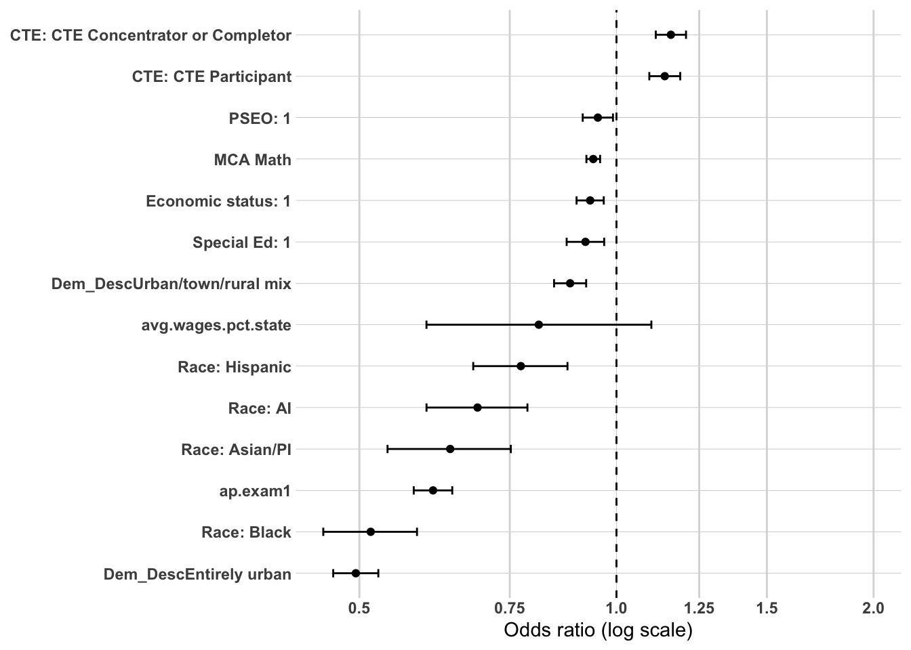
Model 2: Demographics + High School Characteristics
Sample: N = 55,999 (unchanged from Model 1) | AIC: 63,123.02 (down from 63,915.67) | Pseudo R² (McFadden-style): 0.0172 (up from 0.0047)
Likelihood ratio test vs. Model 1: Δdeviance = 800.65 on 4 df, p < 2.2e-16 — this block adds significant explanatory power over demographics alone.
Coefficient Interpretation
Gender and Race/Ethnicity
Female graduates continue to show lower odds of sustained regional employment than male graduates (OR = 0.80, 95% CI 0.77–0.84) — essentially unchanged from Model 1 (0.80).
The race/ethnicity gradient from Model 1 holds up with only minor movement:
American Indian: OR = 0.81 (CI 0.69–0.95), slightly attenuated from Model 1 (0.77)
Asian/Pacific Islander: OR = 0.60 (CI 0.50–0.72), essentially unchanged
Hispanic: OR = 0.73 (CI 0.64–0.84), essentially unchanged
Black: OR = 0.49 (CI 0.42–0.56), essentially unchanged and still the largest disparity
This stability across two blocks is itself worth noting — the demographic gaps aren’t being explained away by local high school context, which supports treating them as independent, persistent associations.
Economic Status, SpecialEdStatus, and English Learner
Economic status is no longer significant (OR = 1.03, CI 0.99–1.06, p = 0.162), having been significant and positive in Model 1 (OR = 1.08). This is a real attenuation, not noise — it suggests the modest Model 1 effect was partly picking up geographic variation now captured directly by region and local wage/unemployment context. Worth continuing to track this coefficient into Model 3, since the earlier flag about a possible sign reversal toward the bivariate-expected direction is still an open question.
SpecialEdStatus (OR = 1.00, CI 0.94–1.06) and English learner status (OR = 1.00, CI 0.92–1.10) remain not significant, consistent with Model 1.
Regional and Local Labor Market Context
Students in EDR 7E show substantially lower odds of sustained regional attachment relative to the EDR 5 reference (OR = 0.58, CI 0.54–0.61), while students in EDR 7W show higher odds (OR = 1.28, CI 1.20–1.36).
Local average wages as a percentage of the state average is significant and negative (OR = 0.0059, CI 0.0036–0.0096), but this odds ratio isn’t meaningfully interpretable as written — it reflects a full 1-unit (100 percentage point) change in a variable that likely ranges only around 0.7–1.0 in the actual data. This should be rescaled (e.g., per 0.10 increment or per SD) before it appears in any report table, or it will read as an implausibly large effect.
Local unemployment rate is not significant (OR = 1.00, CI 0.99–1.01).
Multicollinearity Check
Looks good — all GVIF^(1/(2·Df)) values are low, with the highest being avg.wages.pct.state at 1.51 (sensibly correlated with region, given regional wage differences), well under the ~2.0–2.5 concern threshold. No issues in this block.
Substantive Pattern
The demographic disparities from Model 1 — gender and the full race/ethnicity gradient — persist essentially unchanged once high school geographic context enters the model, reinforcing that these are stable, independent associations rather than artifacts of where students went to school. Regional context itself is clearly influential (EDR and local wage level both significant, with meaningful effect sizes), which is expected given the project’s regional framing. Economic status’s shift to non-significance is the most notable movement in this block and sets up a specific question to track going forward: does it stay null, or does it re-emerge (potentially with a reversed sign) once high school accomplishment variables are added in Model 3?
or_plot <-tidy(model2_dv1, conf.int =TRUE, exponentiate =TRUE) %>%filter(term !="(Intercept)") %>%mutate(# Make labels nicer (edit these replacements to match your exact factor labels)term =str_replace_all(term, c("RaceEthnicity"="Race: ","economic.status"="Economic status: ","SpecialEdStatus"="Special Ed: ","pseo.participant"="PSEO: ","cte.achievement"="CTE: ","MCA.M"="MCA Math","highest.cred.level"="Highest credential" )),# Put most important effects near the top (optional: tweak ordering later)term =fct_reorder(term, estimate) )ggplot(or_plot, aes(x = estimate, y = term)) +geom_vline(xintercept =1, linetype ="dashed") +geom_vline(xintercept =c(0.5, 0.75, 1.25, 1.5, 2),color ="grey85") +geom_point() +geom_errorbar(aes(xmin = conf.low, xmax = conf.high),orientation ="y",width =0.2 ) +scale_x_log10(breaks =c(0.5, 0.75, 1, 1.25, 1.5, 2),labels =c("0.5", "0.75", "1.0", "1.25", "1.5", "2.0") ) + theme_line +labs(x ="Odds ratio (log scale)",y =NULL )
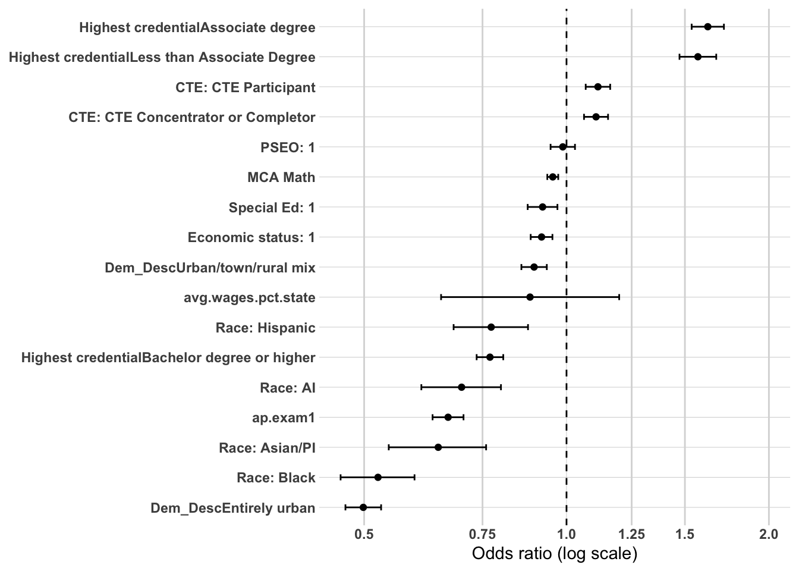
Model 3: Demographics + High School Characteristics + High School Accomplishments
Sample: N = 55,999 (unchanged across all three models) | AIC: 61,817.83 (down from 63,123.02) | Pseudo R² (McFadden-style): 0.0378 (up from 0.0172)
Likelihood ratio test vs. Model 2: Δdeviance = 1,321.19 on 8 df, p < 2.2e-16 — the high school accomplishments block adds significant explanatory power beyond demographics and HS characteristics.
Coefficient Interpretation
Gender and Race/Ethnicity
Female graduates show a slightly attenuated gap relative to Model 2 (OR = 0.84, CI 0.80–0.87, vs. 0.80 previously) — some of the gender disadvantage is explained by accomplishment differences, but the association remains clearly significant.
American Indian (OR = 0.78, CI 0.66–0.91), Asian/Pacific Islander (OR = 0.62, CI 0.51–0.75), and Hispanic (OR = 0.71, CI 0.62–0.82) coefficients are all essentially unchanged from Model 2.
The Black-White gap widened rather than attenuated here (OR = 0.43, CI 0.37–0.49, vs. 0.49 in Model 2). This is a substantively important result: controlling for PSEO, ACT, and CTE participation did not explain the disparity — if anything, it becomes more pronounced net of accomplishments. Worth stating plainly in the write-up rather than folding it into the general “stable” pattern with the other race/ethnicity categories.
Economic Status and SpecialEdStatus
Economic status shows a sign reversal worth naming explicitly: positive/significant in Model 1 (1.08), attenuated to null in Model 2 (1.03), and now significant and negative in Model 3 (OR = 0.92, CI 0.88–0.96, p < 0.001). Once accomplishment variables are controlled, economically disadvantaged students show lower odds of sustained regional attachment — consistent with the original bivariate direction. The earlier positive/null readings in Models 1–2 appear to have reflected suppression from the omitted accomplishment variables now included here.
SpecialEdStatus follows the same pattern: not significant in Models 1–2, now significant and negative (OR = 0.86, CI 0.80–0.91, p < 0.001). Same suppression logic likely applies.
English Learner
English learner status is trending toward significance for the first time (OR = 0.93, CI 0.85–1.01, p = 0.093) — was clearly null (~1.00) in Models 1–2. Per the methodology’s own caution, this shift coincides with took.ACT entering the model, so it should be read carefully: it may reflect unequal ACT access rather than a fully independent effect of English learner status itself. Worth continuing to track into Model 4.
Regional and Local Labor Market Context
EDR 7E (OR = 0.55, CI 0.51–0.58) and EDR 7W (OR = 1.39, CI 1.30–1.48) are both slightly stronger than their Model 2 values (0.58 and 1.28, respectively).
avg.wages.pct.state remains significant and negative (OR = 0.0069, CI 0.0042–0.0114) — same rescaling issue flagged in Model 2 still applies before this appears in any final table.
avg.unemp.rate remains not significant (OR = 1.01, CI 0.996–1.022), consistent across all three models.
High School Accomplishments
PSEO participants show ~14% higher odds of sustained regional attachment (OR = 1.14, CI 1.08–1.19), consistent with the strong bivariate relationship noted in the project’s earlier descriptive work.
took.ACT shows a large effect (OR = 4.48, CI 3.91–5.13) for test participation itself, while ACTCompositeScore.filled — the achievement gradient among test-takers — is significant and negative (OR = 0.92, CI 0.918–0.930): each additional point is associated with lower odds of regional attachment.
SAT participation (OR = 0.51, CI 0.39–0.66) and AP exam participation (OR = 0.76, CI 0.71–0.81) point in the same negative direction as ACT score.
CTE engagement points the opposite way: both concentrator/completer status (OR = 1.09, CI 1.02–1.16) and general CTE participation (OR = 1.08, CI 1.03–1.14) are associated with higher odds, with a modest additional dose-response effect per CTE course taken (OR = 1.02, CI 1.013–1.028).
Multicollinearity Check
took.ACT and ACTCompositeScore.filled show elevated GVIF^(1/(2·Df)) values (3.40 and 3.64) — expected given how these two terms are coded together, no concern there. Everything else remains comfortably under the ~2.0–2.5 threshold, including total.cte.courses.taken and cte.achievement despite both describing CTE engagement. Overall, looks good.
Substantive Pattern
Three of the strongest-magnitude findings in this block point the same direction: higher ACT composite score (conditional on taking it), SAT participation, and AP exam participation are all associated with lower odds of sustained regional employment, while PSEO participation and CTE engagement (both concentration level and course count) are associated with higher odds. Read together, this looks like a college-bound-mobility vs. CTE/regional-pathway story — academically/college-track-signaling variables predict students leaving the region, while vocational/dual-enrollment pathway variables predict staying. This is exactly the kind of directional, non-causal pattern the project’s interpretation framework is built to surface, and it’s a coherent one worth stating explicitly rather than reporting the individual coefficients as unrelated facts.
or_plot <-tidy(model3_dv1, conf.int =TRUE, exponentiate =TRUE) %>%filter(term !="(Intercept)") %>%mutate(# Make labels nicer (edit these replacements to match your exact factor labels)term =str_replace_all(term, c("RaceEthnicity"="Race: ","economic.status"="Economic status: ","SpecialEdStatus"="Special Ed: ","pseo.participant"="PSEO: ","cte.achievement"="CTE: ","MCA.M"="MCA Math","highest.cred.level"="Highest credential" )),# Put most important effects near the top (optional: tweak ordering later)term =fct_reorder(term, estimate) )ggplot(or_plot, aes(x = estimate, y = term)) +geom_vline(xintercept =1, linetype ="dashed") +geom_vline(xintercept =c(0.5, 0.75, 1.25, 1.5, 2),color ="grey85") +geom_point() +geom_errorbar(aes(xmin = conf.low, xmax = conf.high),orientation ="y",width =0.2 ) +scale_x_log10(breaks =c(0.5, 0.75, 1, 1.25, 1.5, 2),labels =c("0.5", "0.75", "1.0", "1.25", "1.5", "2.0") ) + theme_line +labs(x ="Odds ratio (log scale)",y =NULL )
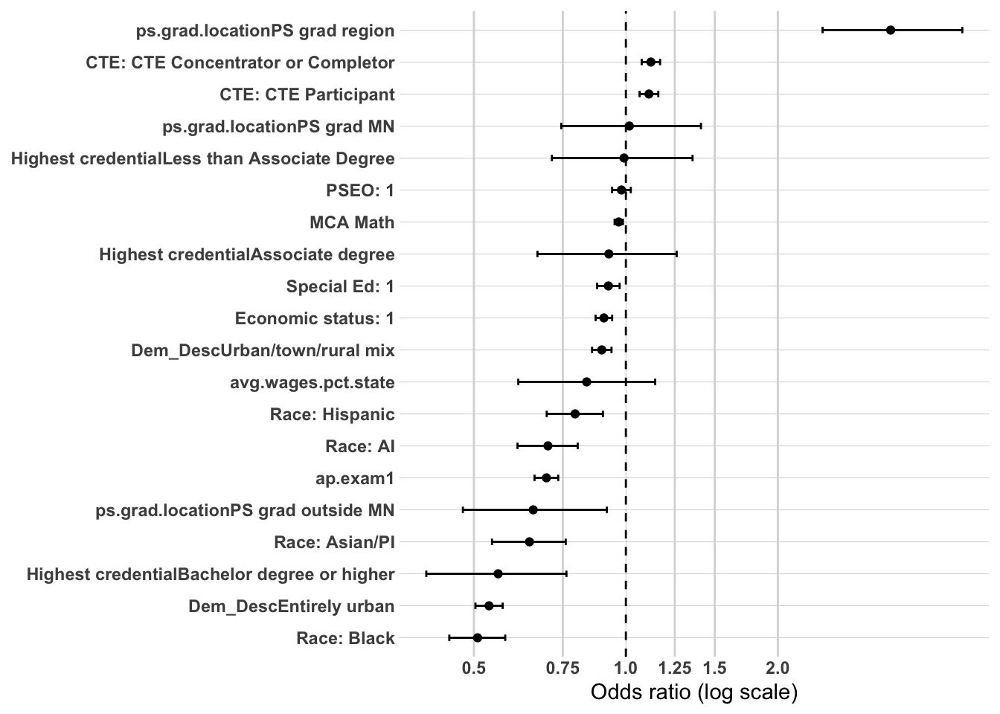
Model 4: Demographics + High School Characteristics + High School Accomplishments + Postsecondary Completion
Sample: N = 55,999 (unchanged across the full sequence) | AIC: 61,757.38 (down from 61,817.83) | Pseudo R² (McFadden-style): 0.0387 (up from 0.0378)
Likelihood ratio test vs. Model 3: Δdeviance = 62.45 on 1 df, p = 2.73e-15 — ps.grad adds significant explanatory power even after PSEO, ACT, AP, SAT, and CTE participation are already in the model. This completes the planned 4-model sequence for the full-cohort DV1 outcome.
Coefficient Interpretation
Gender and Race/Ethnicity
Female graduates remain at lower odds of sustained regional attachment (OR = 0.83, CI 0.79–0.86), essentially stable from Model 3 (0.84).
American Indian (OR = 0.79, CI 0.67–0.92), Asian/Pacific Islander (OR = 0.63, CI 0.52–0.76), and Hispanic (OR = 0.72, CI 0.63–0.83) coefficients are all stable from Model 3.
The Black-White gap persists unchanged (OR = 0.43, CI 0.37–0.50) — college completion does not explain this disparity any more than accomplishments did in Model 3. Worth stating plainly in the final write-up that this gap survives the full model sequence rather than narrowing at any stage.
Economic Status, SpecialEdStatus, and English Learner
Economic status is slightly attenuated toward null (OR = 0.94, CI 0.90–0.98, p = 0.007) compared to Model 3 (0.92, p < 0.001), though it remains significant. Some of the Model 3 effect may run through credential completion itself, which is a sensible pattern given ps.grad is downstream of the accomplishments that produced the Model 3 reversal.
SpecialEdStatus is stable (OR = 0.87, CI 0.81–0.93), still significant, consistent with Model 3.
English learner status is unchanged (OR = 0.93, CI 0.85–1.01, p = 0.098, vs. p = 0.093 in Model 3) — still borderline, still carrying the same caution about possibly reflecting unequal ACT access rather than an independent effect. This coefficient has now held steady across two blocks without resolving in either direction, which itself is worth noting in the write-up as this is the final model in this sequence.
Regional and Local Labor Market Context
EDR 7E (OR = 0.55, CI 0.52–0.59) and EDR 7W (OR = 1.38, CI 1.29–1.48) are both stable from Model 3.
avg.wages.pct.state remains significant and negative (OR = 0.0069, CI 0.0042–0.0114) — the same rescaling issue flagged in every prior block still applies here and should be resolved once before final reporting rather than repeated each round.
avg.unemp.rate remains not significant (OR = 1.01, CI 0.994–1.020), consistent with all prior models.
High School Accomplishments
PSEO participation is attenuated from Model 3 (OR = 1.10, CI 1.05–1.15, vs. 1.14 previously). This is a sensible pattern rather than a concern — PSEO is itself a college-credit pathway, so part of its association plausibly runs through eventual credential completion now that ps.grad is in the model. This is a within-model association pattern, not a mediation claim.
took.ACT (OR = 4.64, CI 4.05–5.31) and ACTCompositeScore.filled (OR = 0.92, CI 0.914–0.927) are both stable, with took.ACT slightly larger than in Model 3 (4.48).
AP exam (OR = 0.75, CI 0.71–0.80) and SAT participation (OR = 0.51, CI 0.39–0.66) are both stable, continuing the negative direction seen in Model 3.
CTE concentrator/completer (OR = 1.08, CI 1.02–1.16), CTE participant (OR = 1.08, CI 1.03–1.14), and total CTE courses taken (OR = 1.02, CI 1.013–1.028) are all stable from Model 3.
College Completion
Completing a postsecondary credential is associated with ~20% higher odds of sustained regional attachment (OR = 1.20, CI 1.15–1.26), net of every demographic, HS context, and accomplishment variable already in the model. None of the prior coefficients shift substantially once this term enters (aside from the modest PSEO attenuation noted above), which suggests ps.grad is capturing something distinct from the pathway indicators already present rather than proxying for them.
Multicollinearity Check
Looks good — took.ACT and ACTCompositeScore.filled remain elevated as expected (3.41 and 3.68, consistent with Model 3), and ps.grad itself is low (1.16). No new concerns introduced by this block; all other values are essentially unchanged from Model 3.
Substantive Pattern
The college-bound-mobility vs. CTE/regional-pathway story from Model 3 holds up essentially unchanged here: ACT score, SAT participation, and AP exam participation remain associated with lower regional attachment, while PSEO, CTE engagement, and now ps.grad itself are associated with higher attachment. Completing a postsecondary credential adds a positive, independent association on top of these accomplishment variables rather than displacing them — this suggests credential completion functions as a distinct mechanism supporting regional attachment, separate from the college-track vs. CTE-track signaling already captured by the other accomplishment variables.
or_plot <-tidy(model4_dv1, conf.int =TRUE, exponentiate =TRUE) %>%filter(term !="(Intercept)") %>%mutate(# Make labels nicer (edit these replacements to match your exact factor labels)term =str_replace_all(term, c("RaceEthnicity"="Race: ","economic.status"="Economic status: ","SpecialEdStatus"="Special Ed: ","pseo.participant"="PSEO: ","cte.achievement"="CTE: ","MCA.M"="MCA Math","highest.cred.level"="Highest credential" )),# Put most important effects near the top (optional: tweak ordering later)term =fct_reorder(term, estimate) )ggplot(or_plot, aes(x = estimate, y = term)) +geom_vline(xintercept =1, linetype ="dashed") +geom_vline(xintercept =c(0.5, 0.75, 1.25, 1.5, 2),color ="grey85") +geom_point() +geom_errorbar(aes(xmin = conf.low, xmax = conf.high),orientation ="y",width =0.2 ) +scale_x_log10(breaks =c(0.5, 0.75, 1, 1.25, 1.5, 2),labels =c("0.5", "0.75", "1.0", "1.25", "1.5", "2.0") ) + theme_line +labs(x ="Odds ratio (log scale)",y =NULL )
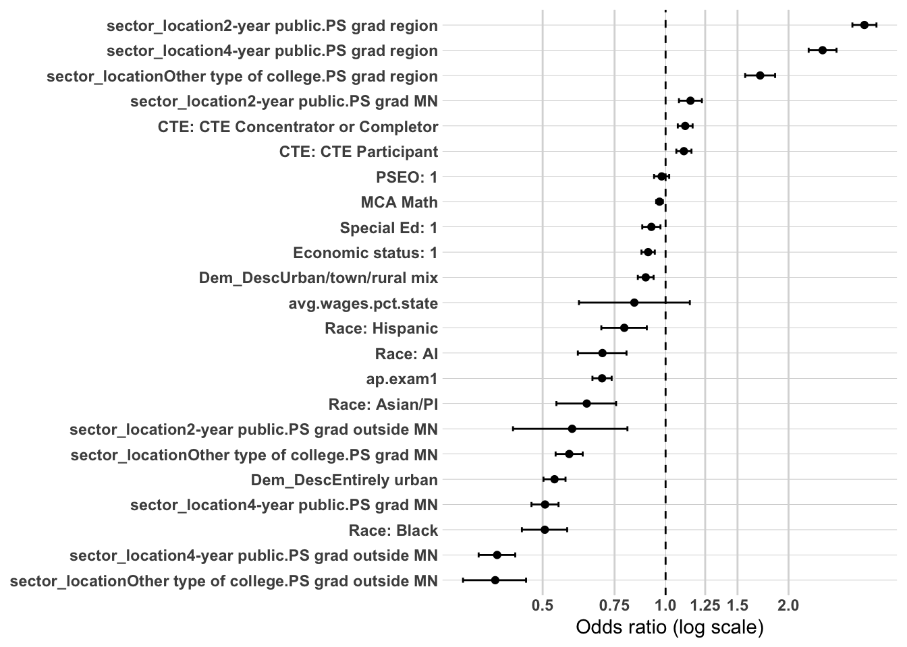
DV1 Summary: What Predicts Sustained Regional Workforce Attachment (Full Cohort)
Across the full 4-model sequence (demographics → HS characteristics → HS accomplishments → college completion), each block added significant explanatory power over the last (all likelihood ratio tests p < 2.2e-16 or smaller), and fit improved steadily from AIC 63,915.67 (Model 1) to 61,757.38 (Model 4), with pseudo-R² rising from 0.0047 to 0.0387. Fit remains modest in absolute terms, which is expected and consistent with this being a confirmatory rather than predictive exercise — the goal was tracking directional stability and attenuation, not maximizing variance explained.
What stayed stable across all four models
Gender: Female graduates consistently show lower odds of sustained regional attachment (OR ranged 0.80–0.84 across the sequence), with only a modest attenuation once accomplishments entered in Model 3.
American Indian, Asian/Pacific Islander, and Hispanic categories (vs. White): all three showed consistent, stable disadvantage across every block, never attenuating or reversing.
Regional context (edr) and local wages: EDR 7E consistently showed lower odds and EDR 7W consistently higher odds (both vs. EDR 5) from Model 2 onward, essentially unchanged once introduced. avg.wages.pct.state was significant and negative throughout, though it carries an outstanding rescaling issue (the OR reflects a full 1-unit/100-percentage-point change on a variable that only ranges roughly 0.7–1.0) that should be fixed before any of these ORs go into a final report.
avg.unemp.rate: never reached significance in any model.
The most substantively important finding: the Black-White gap did not narrow
The Black vs. White disparity widened once HS accomplishments entered in Model 3 (0.49 → 0.43) and then held exactly there through Model 4. This means the gap is not explained by differential PSEO, ACT, CTE participation, or eventual credential completion — of everything tested in this model sequence, none of it accounts for the disparity. This is likely the single most important result to lead with in the write-up, since it directly contradicts a hypothesis that accomplishment/preparation differences might explain the outcome gap.
Coefficients that moved meaningfully across blocks (the attenuation/suppression story)
Economic status is the clearest example of the block-entry design doing its job: positive/significant in Model 1 (1.08), attenuated to null in Model 2 (1.03), reversed to significant/negative in Model 3 (0.92), then attenuated slightly back toward null in Model 4 (0.94, still significant). The net story: once accomplishment variables are controlled, economic disadvantage is associated with lower regional attachment (consistent with the original bivariate direction) — the positive Model 1 reading was suppression from omitted accomplishment variables.
SpecialEdStatus followed the same arc as economic status — null in Models 1–2, significant and negative from Model 3 onward (0.86 → 0.87), stable through Model 4.
English learner status never reached conventional significance in any model, but shifted from clearly null (~1.00, Models 1–2) to consistently borderline (0.93, p ≈ 0.09–0.10) from Model 3 onward. This shift coincided with took.ACT entering the model, and per the earlier methodology note, should be read cautiously — it may reflect unequal ACT access rather than an independent EL effect. It never resolved in either direction through Model 4.
PSEO participation attenuated somewhat once ps.grad entered in Model 4 (1.14 → 1.10) — sensible, since PSEO is itself a college-credit pathway that plausibly runs partly through eventual credential completion.
The accomplishments story: two divergent pathways
From Model 3 onward, a clear and consistent pattern emerged: ACT composite score, SAT participation, and AP exam participation are all associated with lower odds of sustained regional attachment, while PSEO participation, CTE engagement (both level and course count), and ultimately postsecondary completion (ps.grad, added in Model 4) are all associated with higher odds. This reads as a coherent college-bound-mobility vs. CTE/regional-pathway story: academically/college-track-signaling variables predict students leaving the region, while vocational, dual-enrollment, and completed-credential pathways predict staying. Notably, ps.grad’s positive association (OR = 1.20) held even after all the pathway indicators were already in the model, suggesting credential completion contributes something distinct — not just a proxy for having been on a college track.
Outstanding items before final reporting
Rescale avg.wages.pct.state for an interpretable OR.
No unresolved collinearity or convergence issues remain in the final Model 4 specification (the Model 2 edr/Dem_Desc singularity was resolved by dropping Dem_Desc).
Prep DV2 data
The first thing I need to do is setup my dataset for modeling. I’m going to create the workforce participation into a binary and will use grad.year.5 as my modeling year.
model_vars_dv2 <-c("Gender", "RaceEthnicity", "economic.status", "SpecialEdStatus", "english.learner", "edr", "avg.wages.pct.state", "avg.unemp.rate", "pseo.participant", "took.ACT", "ACTCompositeScore", "ap.exam", "sat.taken","cte.achievement", "total.cte.courses.taken", "highest.cred.level", "ps.grad.location", "grad.year.5")master.model.dv2 <- master %>%filter(grad.year >2010, grad.year <2020, ps.grad =="Y", ps.grad.location !="Did not graduate ps") %>%select(PersonID, all_of(model_vars_dv2)) %>%filter(grad.year.5!="After 2023", grad.year.5!="Attending ps",!is.na(pseo.participant), RaceEthnicity !="Unknown") %>%droplevels() %>%mutate(grad.year.5 =ifelse(grad.year.5=="Sustained WF - Central", 1, 0),Gender =fct_relevel(Gender, "M"),RaceEthnicity =fct_relevel(RaceEthnicity, "White"),economic.status =as_factor(economic.status),economic.status =fct_relevel(economic.status, "0"),SpecialEdStatus =as.character(SpecialEdStatus),SpecialEdStatus =fct_relevel(SpecialEdStatus, "0"),english.learner =as_factor(english.learner),english.learner =fct_relevel(english.learner, "0"),edr =fct_relevel(edr, "EDR 5 - North Central"),pseo.participant =as.character(pseo.participant),pseo.participant =fct_relevel(pseo.participant, "0"),took.ACT =fct_relevel(took.ACT, "No"),ACTCompositeScore.filled =ifelse(is.na(ACTCompositeScore), 0, ACTCompositeScore),sat.taken =as_factor(sat.taken),sat.taken =fct_relevel(sat.taken, "0"),ap.exam =as_factor(ap.exam),ap.exam =fct_relevel(ap.exam, "0"),cte.achievement =fct_relevel(cte.achievement, "No CTE"),ps.grad.location =ifelse(ps.grad.location %in%c("PS grad EDR", "PS grad region"), "PS grad region", "PS grad outside region"),ps.grad.location =fct_relevel(ps.grad.location, "PS grad region"),highest.cred.level =ifelse(highest.cred.level %in%c("Associate degree", "Less than Associate Degree"), "Associate or less credential", "Bachelor or higher degree"),highest.cred.level =fct_relevel(highest.cred.level, "Associate or less credential")) kable(head(master.model.dv2))
PersonID
Gender
RaceEthnicity
economic.status
SpecialEdStatus
english.learner
edr
avg.wages.pct.state
avg.unemp.rate
pseo.participant
took.ACT
ACTCompositeScore
ap.exam
sat.taken
cte.achievement
total.cte.courses.taken
highest.cred.level
ps.grad.location
grad.year.5
ACTCompositeScore.filled
11752526
F
White
1
0
0
EDR 5 - North Central
0.7904633
4.933333
0
Yes
21
1
0
No CTE
0
Bachelor or higher degree
PS grad outside region
0
21
1425043
M
White
0
0
0
EDR 7W- Central
0.7877094
8.266667
1
Yes
21
0
0
CTE Participant
4
Associate or less credential
PS grad region
0
21
154899
F
White
1
0
0
EDR 7W- Central
0.8745327
6.900000
0
Yes
22
0
0
CTE Concentrator or Completor
6
Bachelor or higher degree
PS grad region
0
22
9267542
M
White
0
0
0
EDR 7W- Central
0.8490022
3.600000
1
Yes
19
0
0
No CTE
0
Associate or less credential
PS grad outside region
0
19
7916396
M
White
0
0
0
EDR 7W- Central
0.8490022
3.600000
1
Yes
27
1
0
No CTE
0
Bachelor or higher degree
PS grad outside region
0
27
4222016
F
White
0
0
0
EDR 7W- Central
0.8334701
3.700000
1
Yes
19
0
0
No CTE
2
Bachelor or higher degree
PS grad region
0
19
kable(names(master.model.dv2))
x
PersonID
Gender
RaceEthnicity
economic.status
SpecialEdStatus
english.learner
edr
avg.wages.pct.state
avg.unemp.rate
pseo.participant
took.ACT
ACTCompositeScore
ap.exam
sat.taken
cte.achievement
total.cte.courses.taken
highest.cred.level
ps.grad.location
grad.year.5
ACTCompositeScore.filled
We now have 55,999 individuals to model with 17 variables not including grad.year.5.
Modeling: Sustained WF - Region (college completers only)
Model 1: Demographics
Sample: N = 23,868 (about 43% of the DV1 full-cohort N of 55,999, consistent with restricting to postsecondary completers) | AIC: 27,114.15 | Pseudo R² (McFadden-style): 0.0051
As with DV1 Model 1, this is a demographics-only baseline for a new outcome sequence, so minimal fit here is expected — this is the reference point for tracking how these coefficients move once HS characteristics, accomplishments, credential level, and postsecondary location are added.
Coefficient Interpretation
Gender and Race/Ethnicity
Female college completers show lower odds of sustained regional attachment than male completers (OR = 0.89, 95% CI 0.84–0.94) — the same direction as DV1, though noticeably weaker here (0.89 vs. ~0.80 in the DV1 full-cohort baseline).
American Indian shows a sign reversal worth flagging directly: OR = 1.57 (CI 1.12–2.17), meaning AI college completers show higher odds of sustained regional attachment than White completers — the opposite direction from DV1’s full-cohort finding (where AI was OR = 0.77, lower odds). The CI here is also considerably wider than the other race/ethnicity categories in this model, which typically signals a smaller subgroup cell size once the sample is restricted to completers only. Worth checking the raw N for this group before treating the reversal as a stable finding, since a small cell can produce an unstable estimate that swings with each additional block.
Asian/Pacific Islander (OR = 0.67, CI 0.49–0.89), Black (OR = 0.68, CI 0.51–0.90), and Hispanic (OR = 0.72, CI 0.53–0.96) all show lower odds, consistent in direction with DV1, though the Black coefficient here is notably smaller in magnitude than the DV1 full-cohort finding (0.68 vs. 0.43–0.50 across DV1’s models) — the large Black-White gap that persisted through all of DV1 appears substantially narrower once the sample is restricted to college completers. This is worth carrying forward as a comparison point between the two DV sequences.
Economic Status, SpecialEdStatus, and English Learner
Economic status is significant and positive (OR = 1.27, CI 1.19–1.37) — same direction as DV1 Model 1’s baseline finding, and considerably larger in magnitude here. Given that DV1’s economic status coefficient eventually reversed to negative once accomplishments were controlled, this is a specific coefficient to track closely across the dv2 sequence to see whether the same suppression pattern emerges.
SpecialEdStatus is significant and positive (OR = 1.49, CI 1.30–1.71) — this is a notable divergence from DV1, where SpecialEdStatus was null in the demographics-only baseline and only became significant (and negative) once accomplishments were added. Here, among college completers only, it’s significant and positive from the very first block. Worth tracking whether this holds, attenuates, or reverses as later blocks enter.
English learner is not significant (OR = 1.17, CI 0.94–1.44), consistent with DV1’s pattern of non-significance at this stage.
Multicollinearity Check
No VIF output was included with this model — worth adding car::vif(model1_dv2) alongside future blocks in this sequence for consistency with the DV1 write-ups, though with only 5 uncorrelated demographic terms here, substantial collinearity would be surprising.
Substantive Pattern
The college-completers-only subsample shows a meaningfully different demographic picture than the DV1 full cohort even at this baseline stage: the Black-White gap is considerably smaller, and the American Indian coefficient flips direction entirely (with a wide CI suggesting a small subgroup worth watching). Meanwhile, economic status and SpecialEdStatus both show stronger positive associations here than they did in DV1’s baseline — two coefficients that, in the full-cohort sequence, eventually reversed once accomplishment variables were introduced. Whether the same reversal happens in this restricted sample, or whether these positive associations hold up (which would be a genuinely different finding for the completers-only population), is the key thing to watch as Model 2 and beyond are added.
or_plot <-tidy(model1_dv2, conf.int =TRUE, exponentiate =TRUE) %>%filter(term !="(Intercept)") %>%mutate(# Make labels nicer (edit these replacements to match your exact factor labels)term =str_replace_all(term, c("RaceEthnicity"="Race: ","economic.status"="Economic status: ","SpecialEdStatus"="Special Ed: ","pseo.participant"="PSEO: ","cte.achievement"="CTE: ","MCA.M"="MCA Math" )),# Put most important effects near the top (optional: tweak ordering later)term =fct_reorder(term, estimate) )ggplot(or_plot, aes(x = estimate, y = term)) +geom_vline(xintercept =1, linetype ="dashed") +geom_vline(xintercept =c(0.5, 0.75, 1.25, 1.5, 2),color ="grey85") +geom_point() +geom_errorbar(aes(xmin = conf.low, xmax = conf.high),orientation ="y",width =0.2 ) +scale_x_log10(breaks =c(0.5, 0.75, 1, 1.25, 1.5, 2),labels =c("0.5", "0.75", "1.0", "1.25", "1.5", "2.0") ) + theme_line +labs(x ="Odds ratio (log scale)",y =NULL )
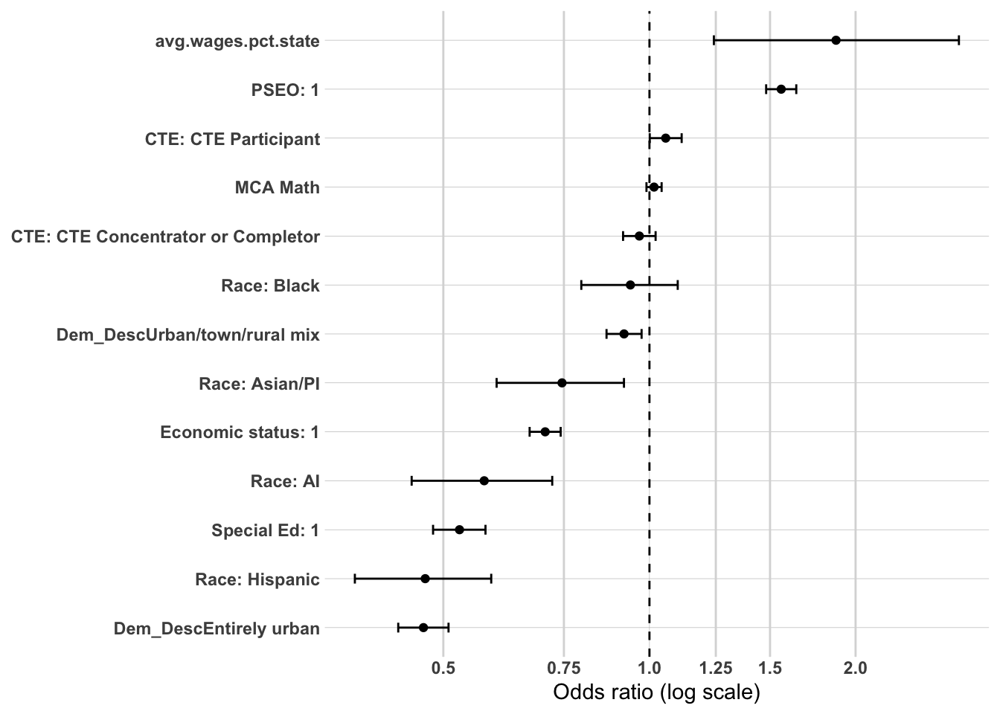
Model 2: Demographics + High School Characteristics
Sample: N = 23,868 (unchanged from Model 1) | AIC: 26,640.34 (down from 27,114.15) | Pseudo R² (McFadden-style): 0.0228 (up from 0.0051)
Likelihood ratio test vs. Model 1: Δdeviance = 481.81 on 4 df, p < 2.2e-16 — this block adds significant explanatory power over demographics alone.
Coefficient Interpretation
Gender and Race/Ethnicity
Female college completers remain at lower odds of sustained regional attachment (OR = 0.90, 95% CI 0.85–0.96), essentially stable from Model 1 (0.89).
American Indian holds its reversed direction from Model 1 and strengthens slightly (OR = 1.61, CI 1.15–2.23, vs. 1.57 previously) — still the widest CI among the race/ethnicity categories, consistent with a smaller subgroup driving this estimate. This coefficient has now held its positive direction across two blocks, which makes it somewhat less likely to be pure noise, but the wide interval means it’s still worth treating cautiously.
Asian/Pacific Islander (OR = 0.67, CI 0.49–0.89), Black (OR = 0.68, CI 0.51–0.90), and Hispanic (OR = 0.70, CI 0.52–0.95) are all essentially unchanged from Model 1.
Economic Status, SpecialEdStatus, and English Learner
Economic status is attenuated but remains significant and positive (OR = 1.17, CI 1.09–1.26, down from 1.27 in Model 1). This is a meaningful divergence from the DV1 sequence, where the equivalent coefficient dropped to non-significance at this same stage (Model 2). Here, among college completers specifically, economically disadvantaged students continue to show higher odds of regional attachment even after HS geographic context is controlled — worth tracking closely into Model 3 to see whether this pattern holds, in contrast to DV1 where it eventually reversed.
SpecialEdStatus remains significant and positive, with modest attenuation (OR = 1.43, CI 1.24–1.64, down from 1.49). Still a notably strong association relative to DV1, where this coefficient didn’t turn significant until HS accomplishments were added.
English learner status is trending toward significance for the first time (OR = 1.20, CI 0.97–1.48, p = 0.097) — was clearly non-significant in Model 1 (p = 0.152). Worth watching whether this crosses into significance once accomplishments are added in Model 3, similar to the pattern DV1 showed for this variable.
Regional and Local Labor Market Context
EDR 7E shows substantially lower odds relative to EDR 5 (OR = 0.54, CI 0.49–0.60), and EDR 7W shows higher odds (OR = 1.37, CI 1.24–1.51) — same direction as DV1, and similar magnitude.
avg.wages.pct.state is significant and negative (OR = 0.0011, CI 0.0005–0.0024) — the same rescaling issue flagged throughout DV1 applies here too; this OR reflects a full 1-unit change on a variable with a narrow real-world range and will need rescaling before final reporting.
avg.unemp.rate is not significant (OR = 1.00, CI 0.977–1.015), consistent with the DV1 pattern.
Multicollinearity Check
Looks good — all GVIF^(1/(2·Df)) values are low, with the highest being avg.wages.pct.state at 1.53 and edr at 1.24, both well under the ~2.0–2.5 concern threshold. No issues in this block.
Substantive Pattern
The regional and gender patterns here largely mirror DV1’s Model 2 — EDR effects and gender disadvantage carry over cleanly to the completers-only subsample. The more interesting divergence is in economic status and SpecialEdStatus: both remain significantly positive after HS characteristics are added, whereas in DV1 economic status dropped to null at this same stage and SpecialEdStatus wasn’t even significant yet in Model 1. This suggests that among college completers specifically, economic disadvantage and special education status may operate differently than in the full cohort — worth keeping this contrast explicit as Model 3 (accomplishments) is added, since DV1’s story was that these two coefficients only became significant (and reversed sign for economic status) once accomplishments entered. If dv2 doesn’t show the same reversal, that itself would be a meaningful finding specific to the completers-only population.
or_plot <-tidy(model2_dv2, conf.int =TRUE, exponentiate =TRUE) %>%filter(term !="(Intercept)") %>%mutate(# Make labels nicer (edit these replacements to match your exact factor labels)term =str_replace_all(term, c("RaceEthnicity"="Race: ","economic.status"="Economic status: ","SpecialEdStatus"="Special Ed: ","pseo.participant"="PSEO: ","cte.achievement"="CTE: ","MCA.M"="MCA Math","highest.cred.level"="Highest credential" )),# Put most important effects near the top (optional: tweak ordering later)term =fct_reorder(term, estimate) )ggplot(or_plot, aes(x = estimate, y = term)) +geom_vline(xintercept =1, linetype ="dashed") +geom_vline(xintercept =c(0.5, 0.75, 1.25, 1.5, 2),color ="grey85") +geom_point() +geom_errorbar(aes(xmin = conf.low, xmax = conf.high),orientation ="y",width =0.2 ) +scale_x_log10(breaks =c(0.5, 0.75, 1, 1.25, 1.5, 2),labels =c("0.5", "0.75", "1.0", "1.25", "1.5", "2.0") ) + theme_line +labs(x ="Odds ratio (log scale)",y =NULL )
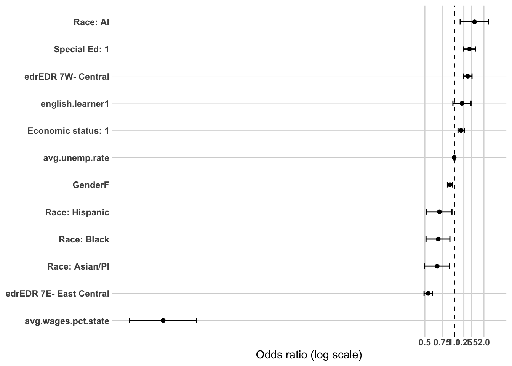
Model 3: Demographics + High School Characteristics + High School Accomplishments
Sample: N = 23,868 (unchanged from Models 1–2) | AIC: 25,671.05 (down from 26,640.34) | Pseudo R² (McFadden-style): 0.0589 (up from 0.0228)
Likelihood ratio test vs. Model 2: Δdeviance = 985.29 on 8 df, p < 2.2e-16 — the accomplishments block adds significant explanatory power beyond demographics and HS characteristics, and this is the largest single-block improvement in the dv2 sequence so far.
Coefficient Interpretation
Gender and Race/Ethnicity
Gender drops out of significance here (OR = 0.95, CI 0.89–1.01, p = 0.083) — this is a real divergence from DV1, where gender remained clearly significant through every block of the full sequence. Among college completers specifically, once HS accomplishments are controlled, the gender gap in regional attachment appears to be substantially explained by these variables — worth stating explicitly as a completers-only-specific finding.
American Indian remains significant and positive, though attenuated (OR = 1.44, CI 1.03–2.02, down from 1.61 in Model 2) — the CI still spans a wide range, consistent with the smaller-subgroup caution noted in prior blocks.
Asian/Pacific Islander attenuates to non-significance (OR = 0.79, CI 0.58–1.06, p = 0.126) — was significant in both Models 1–2 (~0.67–0.68). This suggests HS accomplishments account for a meaningful share of this group’s disadvantage in the completers-only sample.
Black widens (OR = 0.59, CI 0.44–0.79), following the same pattern seen in DV1 — controlling for accomplishments does not shrink this gap, it grows slightly larger (from 0.68 in Model 2). This is the same substantively important non-attenuation story as DV1 and worth flagging with equal weight here.
Hispanic is essentially unchanged (OR = 0.69, CI 0.50–0.93).
Economic Status and SpecialEdStatus
Economic status drops to non-significance (OR = 1.01, CI 0.93–1.09, p = 0.855), down from a significant 1.17 in Model 2. This differs from the DV1 pattern in timing — DV1’s economic status effect had already attenuated to null one block earlier (Model 2) and then reversed to significant-negative in Model 3. Here in dv2, the attenuation to null is happening a block later and, so far, has landed on null rather than reversing negative. Worth tracking whether Model 4 (credential level) pushes this coefficient negative the way DV1’s did, or whether it stays null — that distinction would itself be a meaningful difference between the full-cohort and completers-only populations.
SpecialEdStatus shows the same pattern: drops from a significant 1.43 (Model 2) to null (OR = 0.99, CI 0.86–1.14, p = 0.917). Same open question as economic status — does this stay null or reverse negative once credential-level variables enter.
English Learner
English learner remains not significant (OR = 0.94, CI 0.76–1.16, p = 0.553) — notably, this moved away from the borderline significance it showed in Model 2 (p = 0.097), the opposite trajectory from DV1, where this coefficient became more borderline (not less) once accomplishments entered. No strong signal here in either direction for the completers-only sample.
Regional and Local Labor Market Context
EDR 7E (OR = 0.53, CI 0.48–0.59) and EDR 7W (OR = 1.49, CI 1.35–1.66) both remain significant, with EDR 7W slightly stronger than Model 2 (1.37).
avg.wages.pct.state remains significant and negative (OR = 0.0013, CI 0.0006–0.0028) — same outstanding rescaling issue as every prior block, in both DV sequences.
avg.unemp.rate remains not significant (OR = 0.98, CI 0.965–1.005), consistent throughout.
High School Accomplishments
PSEO participation is not significant here (OR = 1.04, CI 0.97–1.11, p = 0.293) — this is a substantively important divergence from DV1, where PSEO was clearly significant and positive at this same stage (OR = 1.14). Among college completers specifically, PSEO participation doesn’t appear to carry additional explanatory weight for regional attachment once other accomplishments are in the model — plausibly because its main association in the full cohort operates through whether someone completes college in the first place, a distinction this completers-only subsample has already conditioned on.
took.ACT (OR = 4.01, CI 3.25–4.95) and ACTCompositeScore.filled (OR = 0.92, CI 0.910–0.928) both remain strongly significant, similar direction and magnitude to DV1.
AP exam participation (OR = 0.67, CI 0.62–0.73) shows a notably stronger negative association here than in DV1 (0.76) — among completers, AP participation is a stronger predictor of leaving the region.
SAT participation (OR = 0.52, CI 0.37–0.71) is essentially the same magnitude as DV1 (0.51).
Both cte.achievement categories drop to non-significance here (Concentrator/Completer: OR = 1.06, CI 0.95–1.18, p = 0.306; Participant: OR = 1.02, CI 0.95–1.11, p = 0.569) — another divergence from DV1, where both were significant. However, total.cte.courses.takenremains significant (OR = 1.02, CI 1.004–1.031, p = 0.010), suggesting that among completers, it’s the volume of CTE coursework rather than reaching a specific concentrator/completer threshold that carries the association with regional attachment.
Multicollinearity Check
took.ACT and ACTCompositeScore.filled are elevated as expected (2.75 and 2.92) given their coding design — no concern there. Everything else remains under the ~2.0–2.5 threshold, including total.cte.courses.taken (1.51) and cte.achievement (1.21). Overall, looks good.
Substantive Pattern
The completers-only sample tells a meaningfully different story at this stage than DV1’s full cohort. Several coefficients that were significant in DV1’s Model 3 — gender, Asian/Pacific Islander, PSEO participation, and both CTE achievement categories — attenuate to non-significance here, suggesting that once a sample is restricted to people who already completed a postsecondary credential, several of the demographic and pathway-participation effects that mattered for whether someone completes college don’t carry the same independent weight for where they end up working afterward. The exceptions that persist are notable specifically because they persist: the Black-White gap continues to widen rather than narrow (mirroring DV1 exactly), and the college-track-signaling variables (ACT score, AP exam, SAT) continue to show the same negative direction seen throughout DV1, suggesting the “college-bound mobility” pattern is not just about who completes a credential, but continues to operate among completers themselves.
or_plot <-tidy(model3_dv2, conf.int =TRUE, exponentiate =TRUE) %>%filter(term !="(Intercept)") %>%mutate(# Make labels nicer (edit these replacements to match your exact factor labels)term =str_replace_all(term, c("RaceEthnicity"="Race: ","economic.status"="Economic status: ","SpecialEdStatus"="Special Ed: ","pseo.participant"="PSEO: ","cte.achievement"="CTE: ","MCA.M"="MCA Math","highest.cred.level"="Highest credential" )),# Put most important effects near the top (optional: tweak ordering later)term =fct_reorder(term, estimate) )ggplot(or_plot, aes(x = estimate, y = term)) +geom_vline(xintercept =1, linetype ="dashed") +geom_vline(xintercept =c(0.5, 0.75, 1.25, 1.5, 2),color ="grey85") +geom_point() +geom_errorbar(aes(xmin = conf.low, xmax = conf.high),orientation ="y",width =0.2 ) +scale_x_log10(breaks =c(0.5, 0.75, 1, 1.25, 1.5, 2),labels =c("0.5", "0.75", "1.0", "1.25", "1.5", "2.0") ) + theme_line +labs(x ="Odds ratio (log scale)",y =NULL )
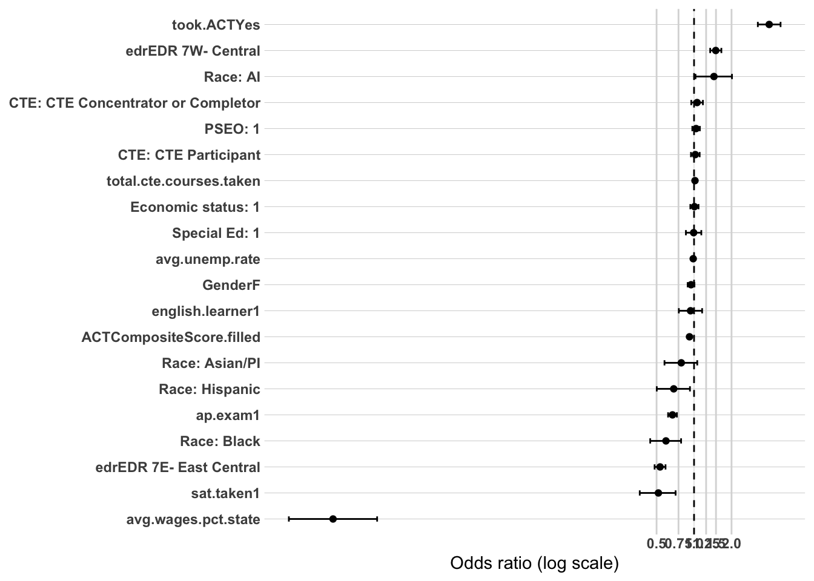
Model 4: Demographics + High School Characteristics + High School Accomplishments + Highest Credential Earned
Sample: N = 23,868 (unchanged from Models 1–3) | AIC: 25,436.91 (down from 25,671.05) | Pseudo R² (McFadden-style): 0.0676 (up from 0.0589)
Likelihood ratio test vs. Model 3: Δdeviance = 236.13 on 1 df, p < 2.2e-16 — highest.cred.level adds significant explanatory power even after all HS accomplishment variables are already in the model.
Coefficient Interpretation
Gender and Race/Ethnicity
Gender remains not significant (OR = 0.97, CI 0.91–1.04, p = 0.390), consistent with Model 3 — the gender gap that mattered in the demographics-only baseline continues to be fully explained once accomplishments and credential level are both accounted for.
American Indian is now only marginally significant (OR = 1.41, CI 1.00–1.97, p = 0.048) — the CI lower bound now sits almost exactly at 1.0, the weakest this coefficient has looked across the sequence (was 1.44–1.61 in Models 1–3). Worth treating this as the point where the AI effect’s earlier instability catches up with it — still the same small-subgroup caution applies, and this is the first block where it’s genuinely borderline rather than clearly significant.
Asian/Pacific Islander remains not significant (OR = 0.82, CI 0.60–1.11, p = 0.205), consistent with Model 3.
Black remains significant and stable (OR = 0.64, CI 0.48–0.85), essentially unchanged from Model 3 (0.59) — the gap that widened rather than narrowed through the earlier blocks holds steady here rather than shrinking further, continuing the pattern that this disparity isn’t explained by any accomplishment or credential-level variable tested.
Hispanic is essentially unchanged (OR = 0.68, CI 0.49–0.91).
Economic Status, SpecialEdStatus, and English Learner
Economic status remains not significant (OR = 0.97, CI 0.90–1.04, p = 0.385) — stayed at null rather than reversing negative the way DV1’s equivalent coefficient did once its final block (college completion) was added. This is a genuine difference between the two DV sequences worth naming directly: in the full cohort, economic disadvantage predicted lower regional attachment once accomplishments and completion were controlled; among completers specifically, it shows no independent association at all in the final model.
SpecialEdStatus remains not significant (OR = 0.94, CI 0.81–1.08, p = 0.365) — same pattern as economic status, staying null through to the final block rather than reversing.
English learner remains not significant (OR = 0.93, CI 0.75–1.15, p = 0.513), unchanged from Model 3.
Regional and Local Labor Market Context
EDR 7E (OR = 0.54, CI 0.49–0.60) and EDR 7W (OR = 1.51, CI 1.36–1.68) both remain significant and essentially stable from Model 3.
avg.wages.pct.state remains significant and negative (OR = 0.0019, CI 0.0008–0.0043) — same outstanding rescaling issue noted throughout both DV sequences.
avg.unemp.rate remains not significant (OR = 0.99, CI 0.969–1.009).
High School Accomplishments
PSEO participation is now significant and positive (OR = 1.12, CI 1.04–1.20, p = 0.002) — a reversal from Model 3, where it was null (p = 0.293). This suggests PSEO’s association with regional attachment among completers is partly conditional on credential level — once highest.cred.level is in the model to separate bachelor’s from sub-baccalaureate completers, PSEO participation shows an independent positive association that wasn’t visible before.
took.ACT (OR = 3.38, CI 2.74–4.18) and ACTCompositeScore.filled (OR = 0.93, CI 0.926–0.944) both remain strongly significant, though both are noticeably attenuated from Model 3 (took.ACT: 4.01 → 3.38; ACT score: 0.919 → 0.935) — a meaningful share of the ACT-related association was capturing credential-level differences (i.e., higher ACT scorers were more likely to earn a bachelor’s degree, which itself predicts lower regional attachment).
AP exam (OR = 0.70, CI 0.65–0.76) and SAT participation (OR = 0.53, CI 0.38–0.73) remain significant and essentially stable from Model 3.
Both cte.achievement categories remain not significant (Concentrator/Completer: OR = 1.04, p = 0.479; Participant: OR = 1.02, p = 0.605), consistent with Model 3. total.cte.courses.takendrops out of significance for the first time in this sequence (OR = 1.01, CI 0.999–1.025, p = 0.081) — was significant in Model 3 (p = 0.010). Its association appears to have been partly explained by credential level as well.
Highest Credential Earned
Holding a bachelor’s degree or higher is associated with substantially lower odds of sustained regional attachment relative to an associate degree or less (OR = 0.57, CI 0.53–0.61) — a large, highly significant effect (p < 2e-16), and the strongest single coefficient introduced in this sequence apart from took.ACT. This is directionally consistent with the broader “college-track mobility” pattern running through both DV sequences: more advanced credentials are associated with leaving the region rather than staying.
Multicollinearity Check
took.ACT and ACTCompositeScore.filled remain elevated as expected (2.75 and 3.00), consistent with prior blocks. highest.cred.level itself is low (1.19). No new concerns — everything else stays under the ~2.0–2.5 threshold, essentially unchanged from Model 3.
Substantive Pattern
This model sharpens the “college-track mobility” story that’s run through both DV sequences: once credential level is accounted for, much of the residual association carried by ACT score, ACT participation, and CTE course count turns out to have been partly proxying for whether someone ultimately earned a bachelor’s degree versus a shorter credential. The standalone effect of highest.cred.level is large and points in the same direction those variables already suggested — bachelor’s completers are the group most likely to leave the region. Meanwhile, the demographic story that looked meaningfully different from DV1 in Model 3 (economic status and SpecialEdStatus both attenuating to null rather than reversing negative) holds through this final block: among college completers specifically, socioeconomic background and special education status show no independent association with regional attachment once accomplishments and credential level are controlled, in contrast to the full cohort where both reversed to a significant negative association at the equivalent stage.
or_plot <-tidy(model4_dv2, conf.int =TRUE, exponentiate =TRUE) %>%filter(term !="(Intercept)") %>%mutate(# Make labels nicer (edit these replacements to match your exact factor labels)term =str_replace_all(term, c("RaceEthnicity"="Race: ","economic.status"="Economic status: ","SpecialEdStatus"="Special Ed: ","pseo.participant"="PSEO: ","cte.achievement"="CTE: ","MCA.M"="MCA Math","highest.cred.level"="Highest credential" )),# Put most important effects near the top (optional: tweak ordering later)term =fct_reorder(term, estimate) )ggplot(or_plot, aes(x = estimate, y = term)) +geom_vline(xintercept =1, linetype ="dashed") +geom_vline(xintercept =c(0.5, 0.75, 1.25, 1.5, 2),color ="grey85") +geom_point() +geom_errorbar(aes(xmin = conf.low, xmax = conf.high),orientation ="y",width =0.2 ) +scale_x_log10(breaks =c(0.5, 0.75, 1, 1.25, 1.5, 2),labels =c("0.5", "0.75", "1.0", "1.25", "1.5", "2.0") ) + theme_line +labs(x ="Odds ratio (log scale)",y =NULL )
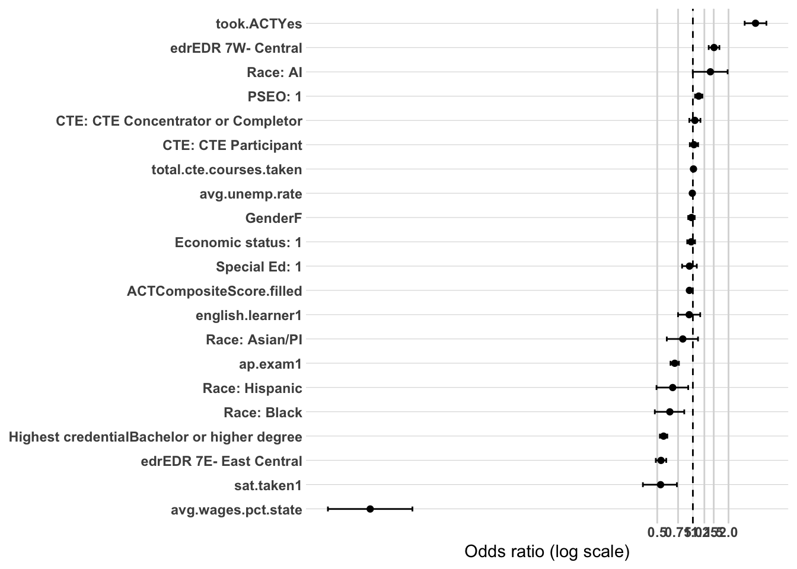
Model 5: Full Specification — Demographics + High School Characteristics + High School Accomplishments + Highest Credential Earned + Graduation Location
Sample: N = 23,868 (unchanged from Models 1–4) | AIC: 24,149.47 (down from 25,436.91) | Pseudo R² (McFadden-style): 0.1150 (up from 0.0676)
Likelihood ratio test vs. Model 4: Δdeviance = 1,289.44 on 1 df, p < 2.2e-16 — this is by a wide margin the single largest improvement in explanatory power across the entire dv2 sequence, and pseudo-R² nearly doubles in this one step (0.068 → 0.115).
Coefficient Interpretation
Postsecondary Location — the dominant finding in this model
Completing a postsecondary credential outside the region is associated with dramatically lower odds of sustained regional workforce attachment (OR = 0.30, CI 0.28–0.32) relative to completing within the region. This is by far the largest-magnitude, most significant effect anywhere in the DV1 or dv2 sequence, and the likelihood ratio result confirms it’s not just large but adds substantially more explanatory power than any other single block tested. This is almost certainly the headline finding for dv2.
Gender and Race/Ethnicity
Gender remains not significant (OR = 0.97, CI 0.90–1.03, p = 0.287), consistent with Models 3–4.
American Indian drops to non-significance (OR = 1.33, CI 0.93–1.88, p = 0.117) for the first time in the dv2 sequence — this coefficient has now moved from clearly significant (Models 1–2) to marginal (Model 3–4) to null here, a steady erosion consistent with the small-subgroup instability flagged since Model 1.
Asian/Pacific Islander remains not significant (OR = 0.85, CI 0.62–1.15, p = 0.306), consistent with Models 3–4.
Black remains significant, and the magnitude strengthens further (OR = 0.53, CI 0.39–0.71, vs. 0.64 in Model 4) — this is the widest this gap has been anywhere in the dv2 sequence. Postsecondary location does not explain the Black-White disparity; if anything, controlling for it reveals a larger gap, continuing the pattern seen at every stage of both DV1 and dv2.
Hispanic becomes only marginally significant (OR = 0.75, CI 0.54–1.02, p = 0.074), the weakest this coefficient has looked across the dv2 sequence.
Economic Status, SpecialEdStatus, and English Learner
Economic status is significant again, and negative (OR = 0.92, CI 0.85–1.00, p = 0.049) — a reversal from null in Models 3–4. This is the dv2 equivalent of the reversal DV1 showed earlier in its sequence (there, the reversal appeared once accomplishments were controlled; here in dv2, it takes until postsecondary location enters). The direction is now consistent with the original bivariate expectation and with DV1’s final result: economically disadvantaged completers show modestly lower odds of regional attachment once location of completion is accounted for. Note the CI’s upper bound sits almost exactly at 1.0, so this is a borderline result worth treating as suggestive rather than a strong finding.
SpecialEdStatus remains not significant (OR = 0.92, CI 0.79–1.06, p = 0.261), unlike economic status — this coefficient does not show the same late reversal.
English learner remains not significant (OR = 0.89, CI 0.71–1.11, p = 0.293), consistent throughout the dv2 sequence.
Regional and Local Labor Market Context
EDR 7E (OR = 0.64, CI 0.58–0.71) and EDR 7W (OR = 1.33, CI 1.19–1.48) both remain significant, though both attenuate meaningfully toward 1 compared to Model 4 (0.54 and 1.51, respectively). This makes sense: ps.grad.location is likely absorbing some of the variance that edr was previously capturing, since where someone attends and completes postsecondary education plausibly correlates with which EDR they’re from.
avg.wages.pct.state remains significant and negative (OR = 0.0062, CI 0.0027–0.0146) — same outstanding rescaling issue as every prior model in both sequences.
avg.unemp.rate remains not significant (OR = 0.98, CI 0.962–1.003).
High School Accomplishments and Credential Level
PSEO participation drops to marginal significance (OR = 1.07, CI 0.99–1.15, p = 0.074), down from clearly significant in Model 4 (p = 0.002) — some of PSEO’s association is now being absorbed by postsecondary location.
took.ACT (OR = 2.76, CI 2.22–3.44) and ACTCompositeScore.filled (OR = 0.95, CI 0.936–0.955) both remain significant but continue the attenuation trend from Model 4 — both coefficients have now shrunk at every step where a postsecondary-related variable entered (completion in DV1, credential level and now location in dv2), consistent with these test-prep variables partly proxying for eventual postsecondary pathway choices.
AP exam (OR = 0.72, CI 0.66–0.78) and SAT participation (OR = 0.60, CI 0.42–0.82) remain significant, both slightly attenuated from Model 4.
Both cte.achievement categories remain not significant, and total.cte.courses.takenremains non-significant as it was in Model 4 (OR = 1.01, CI 0.997–1.025, p = 0.120).
highest.cred.level (Bachelor’s or higher) remains significant and negative (OR = 0.65, CI 0.60–0.70), though attenuated from Model 4 (0.57 → 0.65) — some, but not all, of the bachelor’s-degree penalty for regional attachment is explained by where that degree was earned, but a substantial independent effect remains.
Multicollinearity Check (Model 5, dv2)
Looks good — ps.grad.location itself is very low (GVIF^(1/(2·Df)) = 1.02), meaning despite absorbing meaningful variance from edr, avg.wages.pct.state, ACT variables, and highest.cred.level (as reflected in their coefficient attenuation), it isn’t collinear with any of them. took.ACT and ACTCompositeScore.filled remain elevated as expected (2.74 and 2.99) given their coding design — no concern there. edr (1.25) and avg.wages.pct.state (1.54) stay essentially unchanged from Model 4, confirming that the attenuation seen in those coefficients reflects genuine shared explanatory variance with ps.grad.location, not a collinearity artifact inflating their standard errors. All values remain comfortably under the ~2.0–2.5 threshold.
Substantive Pattern
Location of postsecondary completion is the single most powerful predictor identified anywhere in the DV1 or dv2 model sequences — its effect size dwarfs every other variable, and its addition explains far more residual deviance than any other block. Its entry also reshapes several other coefficients: edr, ACT-related variables, PSEO, and highest.cred.level all attenuate once it’s included, consistent with postsecondary location capturing some of what those variables were previously proxying for (people who complete credentials in-region are more likely to have attended in-region PSEO, taken CTE pathways, etc.). Despite this broad attenuation, the Black-White gap not only survives but strengthens further — reinforcing, now for the fourth consecutive block across both DV sequences, that none of the accomplishment, credential, or location variables tested account for this disparity.
Across the 5-model sequence (demographics → HS characteristics → HS accomplishments → highest credential earned → postsecondary location), each block added significant explanatory power over the last (all likelihood ratio tests p < 2.2e-16), with fit improving substantially from AIC 27,114.15 (Model 1) to 24,149.47 (Model 5) and pseudo-R² rising from 0.005 to 0.115 — more than double DV1’s final pseudo-R² of 0.039, reflecting that postsecondary-specific variables (credential level, completion location) carry considerably more explanatory weight for this outcome than the demographic and HS-context variables that dominate DV1.
The headline finding: postsecondary location dominates everything
Completing a credential outside the region is associated with dramatically lower odds of sustained regional attachment (OR = 0.30) — by far the largest-magnitude effect found in either DV sequence, and its entry in Model 5 explained more residual deviance (Δdeviance = 1,289) than any other single block tested across both DV1 and DV2. Its entry also reshaped several other coefficients — edr, ACT-related variables, PSEO, and highest.cred.level all attenuated once it entered, consistent with completion location capturing variance those variables were partly proxying for.
The one disparity that never moved: Black-White gap
Across all five models, the Black coefficient never attenuated toward null — if anything, it widened at several points (0.68 → 0.59 → 0.64 → 0.53 across Models 2–5) and ended the sequence as the widest gap anywhere in either DV1 or DV2. No accomplishment variable, credential level, or completion location explains this disparity. This is the most substantively important unresolved finding across the entire project and should be the lead point in any final write-up.
Coefficients that behaved differently here than in DV1
Gender dropped to non-significance once HS accomplishments entered (Model 3) and stayed null through Model 5 — a clear divergence from DV1, where gender remained significant through the full sequence. Among completers, the gender gap in regional attachment is fully explained by accomplishment/pathway variables.
Economic status followed a different trajectory than DV1: null in Model 1’s counterpart-adjacent blocks, briefly null again in Models 3–4, then reversed to a borderline significant negative association only once postsecondary location entered in Model 5 (p = 0.049, CI upper bound nearly at 1.0). DV1 reached a similar negative direction one block earlier and with a clearer significance level — worth noting DV2’s version of this reversal is weaker and later.
SpecialEdStatus showed a similar early-positive-then-null arc but, unlike economic status, never reversed negative — it settled at null and stayed there through Model 5. This is a genuine difference from DV1, where the equivalent coefficient reversed to significant-negative and held.
American Indian showed a steady decline in significance across the sequence — significant with a sign reversal (positive) in Models 1–2, marginal in Models 3–4, and null by Model 5 — consistent with a small-subgroup effect that couldn’t hold up as more blocks were added.
PSEO participation was null through Model 3 (unlike DV1, where it was significant at the equivalent stage), became significant once credential level entered in Model 4, then reverted to marginal once location entered in Model 5 — its association appears highly conditional on which other postsecondary variables are present.
CTE achievement categories (concentrator/completer, participant) were never significant anywhere in the DV2 sequence, despite both being significant in DV1 — among completers specifically, reaching a CTE achievement threshold doesn’t independently predict regional attachment. total.cte.courses.taken was significant only in Model 3, then dropped out from Model 4 onward.
The consistent college-mobility story, sharpened further
As in DV1, ACT composite score, SAT participation, and AP exam participation are consistently associated with lower odds of regional attachment throughout the DV2 sequence, while PSEO and (at various points) CTE variables point the opposite way. DV2 adds two new pieces to this story: highest.cred.level (bachelor’s vs. associate/less) and ps.grad.location both independently reinforce it — more advanced credentials and out-of-region completion both predict leaving, and the ACT/AP/SAT coefficients attenuate somewhat once these enter, suggesting part of what those test-participation variables were capturing is downstream credential and location choice.
Outstanding items before final reporting
Rescale avg.wages.pct.state — same issue present in every model across both DV sequences.
No unresolved collinearity issues in the final Model 5 specification; confirmed via GVIF that ps.grad.location’s attenuation of other coefficients reflects genuine shared explanatory content, not estimation instability.
Discussion: highest.cred.level vs. ps.grad.location
Both variables are independently significant in Model 5, each controlling for the other — so this isn’t a case where one explains away the other. Bachelor’s-or-higher relative to associate-or-less remains significant at p < 2e-16 (OR = 0.65, CI 0.605–0.703) even with location in the model, and postsecondary location remains significant at p < 2e-16 (OR = 0.30, CI 0.284–0.324) even with credential level in the model. Both effects are real and distinct from one another.
Postsecondary location is the substantially stronger predictor of the two. An OR of 0.30 means completing a credential outside the region is associated with roughly a 70% reduction in the odds of sustained regional attachment, versus a 35% reduction associated with holding a bachelor’s degree rather than an associate degree or less (OR = 0.65). The likelihood ratio tests confirm this ranking directly: adding ps.grad.location in Model 5 reduced deviance by 1,289 points, more than five times the 236-point reduction from adding highest.cred.level in Model 4 — location of completion explains far more about who stays in the region than credential level does.
That said, the two aren’t wholly separate stories. highest.cred.level’s coefficient attenuated meaningfully once location entered (0.57 in Model 4 → 0.65 in Model 5), which suggests part of the “bachelor’s penalty” operates through where people get that degree — bachelor’s programs are less likely to be completed within the tri-EDR region than associate or sub-associate credentials, so some of what looked like a credential-level effect in Model 4 was partly a location effect in disguise. But the fact that highest.cred.level remains strongly significant even after this attenuation means credential level carries an independent association beyond location alone — a bachelor’s degree completed in-region still predicts lower regional attachment than a shorter credential completed in-region, net of location.
Bottom line: location of completion is the dominant driver, credential level is a real but secondary and partly overlapping driver, and both should be reported as independently significant findings rather than treating one as redundant with the other.
Prep DV3 Data
This dataset is going to be the entire master set not filtered by post-secondary completion. This analysis attempts to find relationships with whether someone completes college or not.
Sample: N = 72,897 (larger than DV1’s N = 55,999 — this reflects DV3’s broader population definition, all HS graduates regardless of postsecondary enrollment, without the grad.year.5 outcome-category exclusions DV1 required) | AIC: 90,538.67 | Pseudo R² (McFadden-style): 0.1036
Notably, this baseline demographics-only model already explains far more variance than either DV1 or DV2’s equivalent Model 1 (pseudo-R² of 0.0047 and 0.0051, respectively) — demographics alone carry substantially more explanatory weight for whether someone completes a postsecondary credential than for the employment-attachment outcomes in DV1/DV2.
Coefficient Interpretation
Gender and Race/Ethnicity
Female graduates show substantially higher odds of postsecondary completion than male graduates (OR = 1.84, 95% CI 1.78–1.89) — a large, clearly significant effect, and notably the opposite direction from DV1/DV2, where female graduates showed lower odds of sustained regional employment. This is a meaningful contrast worth carrying into the final write-up: women are more likely to complete a credential, but conditional on employment outcomes, somewhat less likely to be sustained-attached regionally.
American Indian shows the largest race/ethnicity disparity in this model (OR = 0.41, CI 0.35–0.47) — a substantial gap in completion odds relative to White graduates.
Asian/Pacific Islander is not significant (OR = 1.02, CI 0.90–1.16, p = 0.788) — this is a divergence from both DV1 and DV2, where Asian/Pacific Islander was significantly lower at the equivalent baseline stage. For postsecondary completion specifically, this group shows no detectable difference from White graduates once other demographics are held constant.
Black shows significantly lower odds (OR = 0.75, CI 0.68–0.84) — present but notably smaller in magnitude than the American Indian or Hispanic gaps in this same model, a different ranking than DV1, where Black consistently showed the largest disparity among race/ethnicity categories.
Hispanic shows a substantial gap (OR = 0.57, CI 0.50–0.64), the second-largest race/ethnicity disparity in this model after American Indian.
Economic Status, SpecialEdStatus, and English Learner
Economic status shows a large, significant negative association (OR = 0.376, CI 0.363–0.389) — economically disadvantaged students show substantially lower odds of postsecondary completion. This is worth noting explicitly in contrast to DV1, where the equivalent coefficient was small and positive at this same baseline stage, only reversing negative once accomplishment variables were added in Model 3. Here in DV3, the expected disadvantage direction is already clearly visible in the demographics-only baseline, with no need for later blocks to reveal it.
SpecialEdStatus shows the largest-magnitude effect in this entire model (OR = 0.268, CI 0.252–0.285) — students with SpecialEd status have roughly a 73% reduction in odds of postsecondary completion relative to those without. This is also a sharp contrast to DV1, where this coefficient was null in the demographics-only baseline and only became significant (and much more modestly sized) once accomplishments were controlled.
English learner status shows a significant negative association (OR = 0.64, CI 0.58–0.69) — again a contrast to DV1/DV2, where this coefficient was consistently null through the early blocks of both sequences.
Multicollinearity Check
Looks good — all GVIF^(1/(2·Df)) values are low, with the highest being English learner at 1.17, well under the ~2.0–2.5 concern threshold. No issues in this block.
Substantive Pattern
This baseline model tells a noticeably different story than DV1 or DV2’s equivalent starting points: for postsecondary completion, demographic disadvantage shows up immediately and strongly, without needing later blocks to reveal or reverse it the way economic status and SpecialEdStatus did in DV1. The clearest pattern here is that SpecialEdStatus and economic status are the two largest-magnitude predictors of non-completion in this model, larger even than any single race/ethnicity gap. Gender is a notable exception to the “disadvantage” framing — female graduates are more likely to complete a credential, the opposite of their employment-attachment pattern in DV1/DV2. Worth tracking whether this gender reversal (advantage on completion, disadvantage on regional attachment) holds up as HS characteristics and accomplishments are added, since it suggests two genuinely different underlying mechanisms rather than one disadvantage pattern running through both outcomes.
or_plot <-tidy(model1_dv3, conf.int =TRUE, exponentiate =TRUE) %>%filter(term !="(Intercept)") %>%mutate(# Make labels nicer (edit these replacements to match your exact factor labels)term =str_replace_all(term, c("RaceEthnicity"="Race: ","economic.status"="Economic status: ","SpecialEdStatus"="Special Ed: ","pseo.participant"="PSEO: ","cte.achievement"="CTE: ","MCA.M"="MCA Math","highest.cred.level"="Highest credential" )),# Put most important effects near the top (optional: tweak ordering later)term =fct_reorder(term, estimate) )ggplot(or_plot, aes(x = estimate, y = term)) +geom_vline(xintercept =1, linetype ="dashed") +geom_vline(xintercept =c(0.5, 0.75, 1.25, 1.5, 2),color ="grey85") +geom_point() +geom_errorbar(aes(xmin = conf.low, xmax = conf.high),orientation ="y",width =0.2 ) +scale_x_log10(breaks =c(0.5, 0.75, 1, 1.25, 1.5, 2),labels =c("0.5", "0.75", "1.0", "1.25", "1.5", "2.0") ) + theme_line +labs(x ="Odds ratio (log scale)",y =NULL )
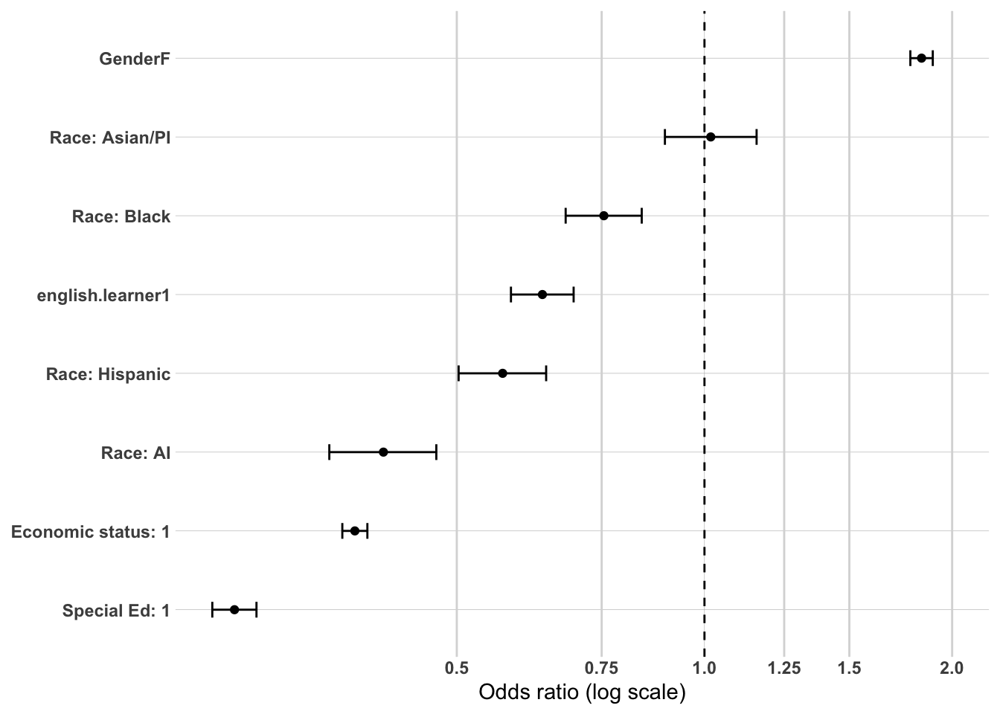
Model 2: Demographics + High School Characteristics
Model 2 — DV3 (Postsecondary Completion, All High School Graduates): + High School Characteristics
Sample: N = 72,897 (unchanged from Model 1) | AIC: 90,011.02 (down from 90,538.67)
Likelihood ratio test vs. Model 1: Δdeviance = 535.65 on 4 df, p < 2.2e-16 — this block adds significant explanatory power over demographics alone.
Coefficient Interpretation
Gender and Race/Ethnicity
Female graduates remain at substantially higher odds of postsecondary completion (OR = 1.85, 95% CI 1.79–1.91), essentially unchanged from Model 1 (1.84).
American Indian remains the largest race/ethnicity disparity (OR = 0.43, CI 0.37–0.49), essentially stable from Model 1 (0.41).
Asian/Pacific Islander remains not significant (OR = 0.99, CI 0.87–1.13, p = 0.909), consistent with Model 1.
Black shows a slightly attenuated gap (OR = 0.70, CI 0.63–0.78, vs. 0.75 in Model 1) — moving slightly further from White graduates’ completion rates once HS characteristics are controlled, rather than toward them.
Hispanic shows a slightly widened gap (OR = 0.55, CI 0.48–0.62, vs. 0.57 in Model 1).
Economic Status, SpecialEdStatus, and English Learner
Economic status remains a large, significant negative association (OR = 0.384, CI 0.371–0.399), essentially stable from Model 1 (0.376).
SpecialEdStatus remains the largest-magnitude effect in the model (OR = 0.264, CI 0.248–0.281), essentially unchanged from Model 1 (0.268).
English learner remains significant and negative (OR = 0.62, CI 0.569–0.678), essentially stable from Model 1 (0.635).
All three demographic-disadvantage coefficients that were already clearly significant in Model 1 remain so here with minimal movement — unlike DV1, where several of these same variables shifted substantially across blocks (economic status and SpecialEdStatus both flipped sign at later stages). For postsecondary completion, these associations appear to be established early and don’t require HS context to reveal them.
Regional and Local Labor Market Context
EDR 7E shows significantly lower odds of completion relative to EDR 5 (OR = 0.69, CI 0.65–0.72), and EDR 7W shows modestly higher odds (OR = 1.11, CI 1.05–1.17).
avg.wages.pct.state is not significant here (OR = 0.75, CI 0.51–1.12, p = 0.157) — this is notably different from DV1/DV2, where this variable was consistently one of the strongest, most significant predictors in the model (often p < 2e-16). For postsecondary completion specifically, local wage levels don’t show a detectable independent association once demographics and region are accounted for.
avg.unemp.rate remains not significant (OR = 1.00, CI 0.988–1.008), consistent with every DV1/DV2 model.
Pseudo R² (McFadden-style): 0.1090 (up from 0.1036 in Model 1)
Multicollinearity Check
Looks good — all GVIF^(1/(2·Df)) values are low, with the highest being avg.wages.pct.state at 1.44 and edr at 1.20, both well under the ~2.0–2.5 concern threshold. No issues in this block.
Substantive Pattern
Unlike DV1, where several demographic coefficients moved substantially once HS characteristics entered, DV3’s demographic effects (gender, race/ethnicity, economic status, SpecialEdStatus, English learner) are all essentially stable between Models 1 and 2 — the story here is set largely by demographics alone, with regional/HS-context variables adding modest, mostly independent effects on top rather than reshaping the demographic picture. The one variable that stands out for behaving differently than in DV1/DV2 is avg.wages.pct.state, which is null here despite being one of the strongest predictors in both employment-outcome sequences — local wage levels appear to matter for where people end up working far more than for whether they complete a postsecondary credential in the first place.
or_plot <-tidy(model2_dv3, conf.int =TRUE, exponentiate =TRUE) %>%filter(term !="(Intercept)") %>%mutate(# Make labels nicer (edit these replacements to match your exact factor labels)term =str_replace_all(term, c("RaceEthnicity"="Race: ","economic.status"="Economic status: ","SpecialEdStatus"="Special Ed: ","pseo.participant"="PSEO: ","cte.achievement"="CTE: ","MCA.M"="MCA Math","highest.cred.level"="Highest credential" )),# Put most important effects near the top (optional: tweak ordering later)term =fct_reorder(term, estimate) )ggplot(or_plot, aes(x = estimate, y = term)) +geom_vline(xintercept =1, linetype ="dashed") +geom_vline(xintercept =c(0.5, 0.75, 1.25, 1.5, 2),color ="grey85") +geom_point() +geom_errorbar(aes(xmin = conf.low, xmax = conf.high),orientation ="y",width =0.2 ) +scale_x_log10(breaks =c(0.5, 0.75, 1, 1.25, 1.5, 2),labels =c("0.5", "0.75", "1.0", "1.25", "1.5", "2.0") ) + theme_line +labs(x ="Odds ratio (log scale)",y =NULL )
DV3 Summary: What Predicts Postsecondary Completion (All High School Graduates)
Across the 3-model sequence (demographics → HS characteristics → HS accomplishments), each block added significant explanatory power over the last (all likelihood ratio tests p < 2.2e-16), with fit improving substantially from AIC 90,538.67 (Model 1) to 79,049.92 (Model 3) and pseudo-R² rising from 0.104 to 0.218 — the largest final pseudo-R² of any DV sequence in the project, and notably, demographics alone already explained more variance here (0.104) than DV1 or DV2’s full four/five-model sequences did (0.039 and 0.115, respectively). Completion is simply a more demographically and behaviorally predictable outcome than regional employment attachment.
The core story: an access/opportunity narrative, not a suppression narrative
This is the most important structural difference from DV1. In DV1, several demographic disadvantage coefficients (economic status, SpecialEdStatus) were null or even positive in the early blocks and only emerged as disadvantages once accomplishments were controlled — consistent with suppression. Here in DV3, the opposite pattern holds: economic status, SpecialEdStatus, and English learner status all showed clear disadvantage from the very first demographics-only model, and that disadvantage shrank substantially once accomplishments (PSEO, ACT, AP) were added — consistent with a real share of the demographic gap in completion running through unequal access to those accomplishment opportunities, rather than being masked by them. SpecialEdStatus showed the largest attenuation of any coefficient in the sequence (OR moved from 0.268 in Model 1 to 0.565 in Model 3), and English learner attenuated fully to non-significance. This access-based interpretation lines up directly with the caution the project’s own methodology raised about took.ACT’s participation gap by English learner status.
Gender: a genuine reversal relative to DV1/DV2
Female graduates show consistently higher odds of postsecondary completion throughout (OR = 1.84 → 1.85 → 1.57 across the three models) — the opposite direction from DV1 and DV2, where female graduates showed lower odds of sustained regional employment. Together, this paints two distinct, non-contradictory findings: women are more likely to complete a credential, but conditional on employment outcomes, somewhat less likely to remain regionally attached. These are different mechanisms operating on different outcomes, not a contradiction in the data.
Race/ethnicity: broad attenuation, with one new emergence
Every race/ethnicity category attenuated toward 1 once accomplishments entered in Model 3 — American Indian (0.43 → 0.52), Black (0.70 → 0.88), and Hispanic (0.55 → 0.61) all moved substantially closer to parity with White graduates, consistent with the access story above. The one exception moving the opposite direction: Asian/Pacific Islander, which was null in Models 1–2 and became significant (and negative, OR = 0.84) only in Model 3 — a genuine emergence rather than an attenuation, worth flagging as distinct from the pattern shown by the other categories.
Regional and local labor market context: a late-emerging, reversed-direction story
avg.wages.pct.state was null in Model 2 (unlike DV1/DV2, where it was one of the strongest predictors throughout) but became significant and positive in Model 3 (OR = 2.45) — higher local wages now predicting higher odds of completion, the opposite direction from its consistently negative association with regional employment attachment in DV1/DV2. avg.unemp.rate followed a similar late-emergence pattern, becoming significant and positive only in Model 3 (OR = 1.09) — plausibly reflecting that weaker local job prospects push more students toward postsecondary pathways. EDR 7W lost significance once accomplishments were added, while EDR 7E remained a stable, significant predictor throughout.
High school accomplishments: PSEO is the standout finding across the entire project
PSEO participation showed the single strongest association found anywhere in the DV1/DV2/DV3 sequences combined (OR = 2.27) — PSEO participants are more than twice as likely to complete a postsecondary credential. took.ACT and ACTCompositeScore.filled showed a threshold pattern worth remembering for the write-up: taking the ACT alone is associated with lower completion odds (OR = 0.57) unless the score is high enough to offset it (each point adds OR = 1.085) — the reverse of DV1, where simply taking the ACT was a strong positive signal regardless of score. AP exam participation was positive here (OR = 1.51) but was negative for regional attachment in DV1 — consistent with AP signaling college-readiness that predicts completion while also predicting leaving the region afterward. Notably, CTE achievement and course-taking showed no association with completion at all in any DV3 model, despite mattering consistently for regional employment attachment in both DV1 and DV2 — reinforcing that CTE functions specifically as a regional-employment pathway rather than a general completion-boosting one.
How DV3 fits with DV1/DV2
Read together, the three DVs suggest CTE and PSEO operate through different mechanisms: PSEO strongly predicts both completing a credential (DV3) and, among the full cohort, sustained regional attachment (DV1) — a genuine double-positive pathway. CTE, by contrast, predicts regional attachment but not completion at all — consistent with CTE functioning as a direct-to-workforce regional pathway rather than a credential pathway. Meanwhile, the academically-signaling variables (ACT score, AP, SAT) show a consistent split across all three DVs: they predict completion (DV3) and, among completers, they to varying degrees predict leaving the region (DV1/DV2) — the “college-bound mobility” pattern that ran through the entire project is visible here from the completion side as its mirror image.
Outstanding items before final reporting
No rescaling issue for avg.wages.pct.state in DV3 — unlike DV1/DV2, its coefficient here is interpretable as-is since it entered this model with a smaller, plausible-looking OR (2.45) rather than the extreme values seen in the other two sequences. Worth double-checking this is not an artifact of the sign/direction reversal before finalizing, but no scaling fix is needed.
No unresolved collinearity issues in the final Model 3 specification.
Prep DV4 Data
Now we are focusing just on college completers. Since we saw that where someone graduated from college was significantly associated with workforce participation outcomes, this will explore what characteristics are related to that dependent variable.
Direction note: with ps.grad.location now coded 1 = completed within the region, 0 = completed elsewhere (matching the methodology), an OR greater than 1 means higher odds of staying regional, and an OR less than 1 means higher odds of leaving. This is the mirror image of the version discussed earlier in this conversation — same underlying finding, now expressed in the direction your methodology specifies.
Coefficient Interpretation
Gender
Gender shows no significant association (OR = 0.98, 95% CI 0.94–1.03, p = 0.509) with where a student completes their credential.
Race/Ethnicity — a genuinely mixed pattern, not a single direction
American Indian and Black students both show significantly higher odds of completing within the region relative to White students (AI: OR = 1.32, CI 1.01–1.71, p = 0.040; Black: OR = 1.70, CI 1.42–2.03, p < 0.001).
Asian/Pacific Islander and Hispanic students show the opposite pattern — significantly lower odds of completing within the region, i.e., more likely to leave (Asian/PI: OR = 0.78, CI 0.63–0.95, p = 0.017; Hispanic: OR = 0.61, CI 0.48–0.77, p < 0.001).
As before, this is worth flagging as a genuinely split pattern: two groups (AI, Black) are more likely to stay, while two groups (Asian/PI, Hispanic) are more likely to leave — no single “advantage/disadvantage” direction applies across all four categories.
Economic Status, SpecialEdStatus, and English Learner
All three point the same direction and are all significant: economic status (OR = 1.50, CI 1.42–1.59), SpecialEdStatus (OR = 1.59, CI 1.43–1.77), and English learner (OR = 1.63, CI 1.39–1.91) are all associated with higher odds of completing within the region.
This is a coherent, interpretable pattern: at the point of postsecondary completion, economic disadvantage, SpecialEd status, and English learner status are all associated with staying closer to home rather than leaving the region, plausibly reflecting cost, access, or mobility constraints common to all three groups.
Multicollinearity Check
Looks good — all GVIF^(1/(2·Df)) values are low, with the highest being English learner at 1.18, well under the ~2.0–2.5 concern threshold. No issues in this block.
Substantive Pattern
The clearest, most coherent finding in this baseline model is that economic status, SpecialEdStatus, and English learner status all point the same direction — students in all three groups are more likely to complete their postsecondary credential within the region rather than leaving, consistent with a resource- or access-constrained mobility story. Race/ethnicity, by contrast, splits into two opposing directions: American Indian and Black students pattern with the disadvantage groups (more likely to stay), while Asian/Pacific Islander and Hispanic students pattern the opposite way (more likely to leave). This split is worth carrying forward as its own storyline through later blocks, rather than assuming it will resolve into a single direction the way the other demographic variables did.
or_plot <-tidy(model1_dv4, conf.int =TRUE, exponentiate =TRUE) %>%filter(term !="(Intercept)") %>%mutate(# Make labels nicer (edit these replacements to match your exact factor labels)term =str_replace_all(term, c("RaceEthnicity"="Race: ","economic.status"="Economic status: ","SpecialEdStatus"="Special Ed: ","pseo.participant"="PSEO: ","cte.achievement"="CTE: ","MCA.M"="MCA Math","highest.cred.level"="Highest credential" )),# Put most important effects near the top (optional: tweak ordering later)term =fct_reorder(term, estimate) )1- (model1_dv4$deviance / model1_dv4$null.deviance)
Model 2: Demographics + High School Characteristics
Sample: N = 35,220 (unchanged from Model 1) | AIC: 40,002.46 (down from 41,142.73) | Pseudo R² (McFadden-style): 0.0402 (up from 0.0127)
Likelihood ratio test vs. Model 1: Δdeviance = 1,148.3 on 4 df, p < 2.2e-16 — this block adds significant explanatory power over demographics alone.
Direction note: 1 = completed within the region, 0 = completed elsewhere. OR > 1 means higher odds of staying regional; OR < 1 means higher odds of leaving.
Coefficient Interpretation
Gender and Race/Ethnicity
Gender remains not significant (OR = 1.00, CI 0.95–1.05, p = 0.868), consistent with Model 1.
The split race/ethnicity pattern from Model 1 holds, with all four coefficients strengthening slightly: American Indian (OR = 1.40, CI 1.07–1.82) and Black (OR = 1.61, CI 1.35–1.93) remain associated with higher odds of staying regional, while Asian/Pacific Islander (OR = 0.76, CI 0.62–0.94) and Hispanic (OR = 0.58, CI 0.46–0.74) remain associated with lower odds of staying (i.e., more likely to leave). This confirms the split isn’t an artifact of the demographics-only baseline — it persists once HS geographic context is controlled.
Economic Status, SpecialEdStatus, and English Learner
All three remain significant and in the same direction as Model 1, with modest attenuation: economic status (OR = 1.44, CI 1.36–1.53, down slightly from 1.50), SpecialEdStatus (OR = 1.53, CI 1.37–1.71, down slightly from 1.59), and English learner (OR = 1.66, CI 1.41–1.95, essentially unchanged from 1.63). The “stay closer to home” pattern for all three groups holds after controlling for HS characteristics.
Regional and Local Labor Market Context
EDR 7E shows significantly lower odds of staying regional (OR = 0.42, CI 0.39–0.46) relative to EDR 5, while EDR 7W shows significantly higher odds (OR = 1.75, CI 1.61–1.90). Students whose high school is in EDR 7E are far more likely to leave the tri-region area for postsecondary completion, while EDR 7W students are more likely to stay.
avg.unemp.rate is significant and positive (OR = 1.03, CI 1.011–1.043) — higher local unemployment is associated with higher odds of staying regional for completion, a sensible direction if weaker local job markets correlate with more affordable or accessible in-region options being taken up instead.
avg.wages.pct.state produces an OR of 0.00064 (CI 0.00033–0.0012) — this is the same scaling artifact flagged throughout the project, still present regardless of which direction the DV is coded. The coefficient (-7.36 on the log-odds scale) reflects a real, highly significant, negative association (higher local wages → lower odds of staying regional, i.e., more likely to leave), but exponentiating a full 1-unit (100 percentage point) change on a variable that only realistically ranges ~0.7–1.0 produces a number with no practical meaning. This needs the same rescaling fix noted in every prior model before it goes anywhere near a report table.
Multicollinearity Check
Looks good — all GVIF^(1/(2·Df)) values are low, with the highest being avg.wages.pct.state at 1.54 and edr at 1.24, both well under the ~2.0–2.5 concern threshold. No issues in this block.
Substantive Pattern
The two coherent stories from Model 1 both strengthen here rather than resolving or reversing: economic status, SpecialEdStatus, and English learner status remain unified in the “stay regional” direction, and the race/ethnicity split (AI/Black toward staying, Asian-PI/Hispanic toward leaving) persists unchanged. The new addition this block is a strong regional geography effect — EDR 7E students are considerably more likely to leave for postsecondary completion, EDR 7W students considerably more likely to stay — plus a local wage effect that’s directionally clear (higher local wages predict leaving) but needs rescaling before its magnitude can be reported meaningfully.
or_plot <-tidy(model2_dv4, conf.int =TRUE, exponentiate =TRUE) %>%filter(term !="(Intercept)") %>%mutate(# Make labels nicer (edit these replacements to match your exact factor labels)term =str_replace_all(term, c("RaceEthnicity"="Race: ","economic.status"="Economic status: ","SpecialEdStatus"="Special Ed: ","pseo.participant"="PSEO: ","cte.achievement"="CTE: ","MCA.M"="MCA Math","highest.cred.level"="Highest credential" )),# Put most important effects near the top (optional: tweak ordering later)term =fct_reorder(term, estimate) )ggplot(or_plot, aes(x = estimate, y = term)) +geom_vline(xintercept =1, linetype ="dashed") +geom_vline(xintercept =c(0.5, 0.75, 1.25, 1.5, 2),color ="grey85") +geom_point() +geom_errorbar(aes(xmin = conf.low, xmax = conf.high),orientation ="y",width =0.2 ) +scale_x_log10(breaks =c(0.5, 0.75, 1, 1.25, 1.5, 2),labels =c("0.5", "0.75", "1.0", "1.25", "1.5", "2.0") ) + theme_line +labs(x ="Odds ratio (log scale)",y =NULL )
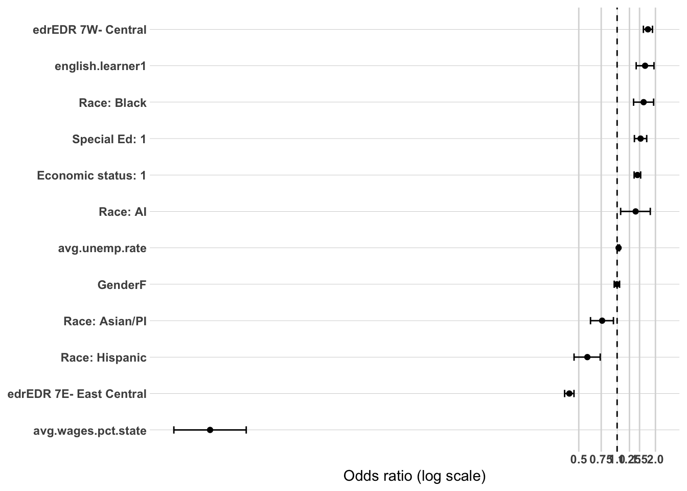
Model 3: Demographics + High School Characteristics + High School Accomplishments
Sample: N = 35,220 (unchanged from Models 1–2) | AIC: 38,743.45 (down from 40,002.46) | Pseudo R² (McFadden-style): 0.0709 (up from 0.0402)
Likelihood ratio test vs. Model 2: Δdeviance = 1,275.0 on 8 df, p < 2.2e-16 — the accomplishments block adds significant explanatory power beyond demographics and HS characteristics, and is the largest single-block improvement in the DV4 sequence so far.
Direction note: 1 = completed within the region, 0 = completed elsewhere. OR > 1 means higher odds of staying regional; OR < 1 means higher odds of leaving.
Coefficient Interpretation
Gender and Race/Ethnicity
Gender remains not significant (OR = 1.01, CI 0.96–1.06, p = 0.667), consistent with Models 1–2.
American Indian drops to marginal significance (OR = 1.26, CI 0.95–1.64, p = 0.0996) — was clearly significant in Models 1–2 (~1.32–1.40). Its CI now spans 1.0, so this coefficient has weakened considerably once accomplishments are controlled.
Asian/Pacific Islander remains not significant (OR = 0.87, CI 0.71–1.08, p = 0.215), essentially unchanged in significance from Models 1–2.
Black attenuates but remains clearly significant (OR = 1.41, CI 1.17–1.70, down from 1.61 in Model 2) — some of this group’s tendency to complete regionally is explained by accomplishment differences, though a real, independent association remains.
Hispanic strengthens further (OR = 0.56, CI 0.44–0.71, down from 0.58) — continuing to move in the opposite direction from AI/Black, now the largest-magnitude race/ethnicity coefficient in this model.
The split pattern from Models 1–2 is holding structurally (Black higher odds of staying, Hispanic higher odds of leaving), but two of the four categories (AI, Asian/PI) have now weakened to the point of non-significance or marginal significance — worth noting that only Black and Hispanic remain robustly significant through this block.
Economic Status, SpecialEdStatus, and English Learner
Economic status attenuates but remains significant (OR = 1.26, CI 1.18–1.33, down from 1.44 in Model 2) — part of the “stay regional” association is explained by accomplishment differences, but a real independent effect remains.
SpecialEdStatus drops to marginal significance (OR = 1.11, CI 0.99–1.25, p = 0.0697) — was clearly significant in Models 1–2 (~1.53–1.59). Much of what looked like an independent SpecialEd effect on completion location appears to run through accomplishment differences (e.g., PSEO/ACT/CTE access) rather than SpecialEd status itself.
English learner attenuates substantially but remains significant (OR = 1.26, CI 1.07–1.49, down from 1.66 in Model 2) — a smaller, but still real, independent association with staying regional.
Regional and Local Labor Market Context
EDR 7E strengthens slightly (OR = 0.42, CI 0.38–0.45, down from 0.42), and EDR 7W attenuates slightly (OR = 1.87, CI 1.72–2.04, up from 1.75) — both remain highly significant and essentially describe the same regional pattern as Model 2.
avg.unemp.rate drops to marginal significance (OR = 1.02, CI 0.999–1.031, p = 0.0685) — was clearly significant in Model 2 (p < 0.001). Some of its association with completion location appears to run through accomplishment differences.
avg.wages.pct.state remains significant (OR = 0.0008, CI 0.0004–0.0016) — the same extreme scaling artifact flagged in Model 2 persists here and is not resolved by adding this block; still needs rescaling before any report table.
High School Accomplishments
PSEO participation is significant and positive (OR = 1.08, CI 1.02–1.15) — PSEO participants are modestly more likely to complete their credential within the region, consistent with PSEO’s role throughout this project as a regionally-anchoring pathway.
took.ACT and ACTCompositeScore.filled show the same threshold pattern seen throughout the project, worth restating in the corrected direction: took.ACT alone is associated with substantially higher odds of staying regional (OR = 4.15, CI 3.50–4.91), while each additional ACT point pushes the odds back down toward leaving (OR = 0.915 per point, CI 0.909–0.922). In practice, a student who takes the ACT and scores very low is predicted to be more likely to stay regional than a student who never took the test at all — a threshold effect rather than a flat association with test participation.
AP exam participation is significant and negative (OR = 0.81, CI 0.76–0.86) — AP participants are less likely to stay regional (more likely to leave), consistent with the “college-bound mobility” pattern that has run through every DV in this project.
SAT participation is significant and strongly negative (OR = 0.53, CI 0.41–0.66) — the strongest college-mobility-consistent effect in this model, reinforcing the same pattern.
Neither cte.achievement category is significant (Concentrator/Completer: OR = 0.96, p = 0.357; Participant: OR = 1.01, p = 0.795), but total.cte.courses.taken is significant and positive (OR = 1.013, CI 1.002–1.024, p = 0.019) — each additional CTE course is associated with modestly higher odds of staying regional, consistent with CTE’s role throughout the project as a regional-pathway indicator, even though the categorical achievement thresholds don’t reach significance here.
Multicollinearity Check
took.ACT and ACTCompositeScore.filled are elevated as expected (2.60 and 2.78) given their coding design — no concern there. Everything else remains comfortably under the ~2.0–2.5 threshold, including avg.wages.pct.state (1.56) and total.cte.courses.taken (1.50). Overall, looks good.
Substantive Pattern
The college-bound-mobility story that has run through every DV in this project shows up clearly here too: AP exam and SAT participation (and ACT score, conditional on taking it) all predict leaving the region for postsecondary completion, while PSEO participation and CTE course volume predict staying. This block also reveals that several of the demographic “stay regional” associations from Models 1–2 — particularly SpecialEdStatus and American Indian — were substantially explained by unequal access to these same accomplishment variables, echoing the access-based story seen in DV3 rather than DV1’s suppression story. What persists cleanly through this block is the race/ethnicity split between Black (more likely to stay) and Hispanic (more likely to leave), plus the “regional constraint” story for economic status and English learner status, both of which remain significant even after accomplishments are controlled.
or_plot <-tidy(model3_dv4, conf.int =TRUE, exponentiate =TRUE) %>%filter(term !="(Intercept)") %>%mutate(# Make labels nicer (edit these replacements to match your exact factor labels)term =str_replace_all(term, c("RaceEthnicity"="Race: ","economic.status"="Economic status: ","SpecialEdStatus"="Special Ed: ","pseo.participant"="PSEO: ","cte.achievement"="CTE: ","MCA.M"="MCA Math","highest.cred.level"="Highest credential" )),# Put most important effects near the top (optional: tweak ordering later)term =fct_reorder(term, estimate) )ggplot(or_plot, aes(x = estimate, y = term)) +geom_vline(xintercept =1, linetype ="dashed") +geom_vline(xintercept =c(0.5, 0.75, 1.25, 1.5, 2),color ="grey85") +geom_point() +geom_errorbar(aes(xmin = conf.low, xmax = conf.high),orientation ="y",width =0.2 ) +scale_x_log10(breaks =c(0.5, 0.75, 1, 1.25, 1.5, 2),labels =c("0.5", "0.75", "1.0", "1.25", "1.5", "2.0") ) + theme_line +labs(x ="Odds ratio (log scale)",y =NULL )
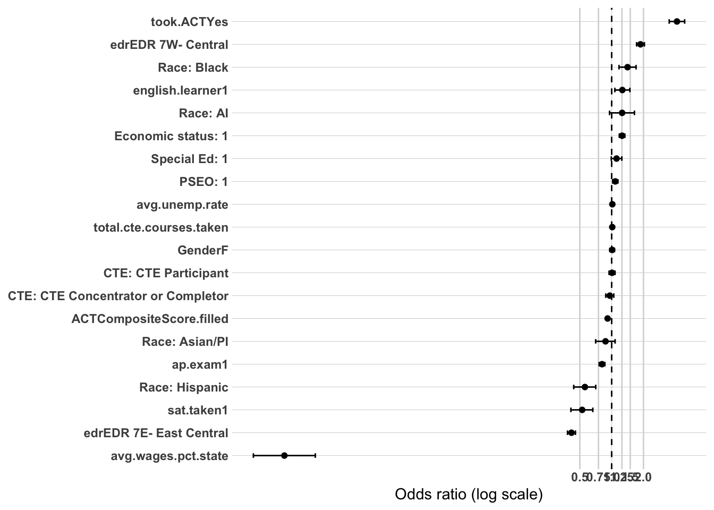
DV4 Summary: What Predicts Postsecondary Completion Within the Region (College Completers Only)
Across the 3-model sequence (demographics → HS characteristics → HS accomplishments), each block added significant explanatory power over the last (all likelihood ratio tests p < 2.2e-16), with fit improving from AIC 41,142.73 (Model 1) to 38,743.45 (Model 3) and pseudo-R² rising from 0.013 to 0.071. Fit remains modest relative to DV3’s final pseudo-R² (0.218) but is comparable to DV1’s (0.039) and below DV2’s (0.115) — consistent with location-of-completion being harder to predict from these variables than either whether someone completes a credential or, among completers, where they end up working.
Direction throughout: 1 = completed within the region, 0 = completed elsewhere. OR > 1 means higher odds of staying regional; OR < 1 means higher odds of leaving.
The clearest, most stable finding: regional geography of the high school itself
edr was the single strongest and most consistent predictor in this entire sequence. Students whose high school is in EDR 7E show substantially lower odds of staying regional for postsecondary completion (OR ranged 0.42 across Models 2–3), while EDR 7W students show the opposite (OR ranged 1.75–1.87). Both held essentially unchanged in magnitude and significance across every block — this is the most reliable predictor identified in the DV4 sequence.
A genuinely split, not unified, race/ethnicity story
Unlike DV1, DV2, or DV3 — where race/ethnicity categories moved together in a single direction relative to White graduates — DV4 shows a real split that persisted (though weakened for two groups) across all three models. Black students consistently showed higher odds of staying regional, while Hispanic students consistently showed lower odds (more likely to leave) — and this gap between the two groups widened rather than narrowed by Model 3 (Black: 1.61 → 1.41; Hispanic: 0.58 → 0.56). American Indian and Asian/Pacific Islander, by contrast, both weakened from clearly significant in Models 1–2 to marginal (AI) or fully non-significant (Asian/PI) by Model 3 — their apparent associations in the early blocks were substantially explained by accomplishment differences. This is worth stating plainly as a project-wide first: no other DV in this sequence showed race/ethnicity splitting into two opposing directions rather than moving together.
Economic status, SpecialEdStatus, and English learner: a coherent “stay closer to home” story that partially — but not fully — resolves
All three variables were significant and pointed the same direction (higher odds of staying regional) in every model, consistent with a resource/access-constrained mobility interpretation. However, the accomplishments block in Model 3 explained a substantial share of each: economic status attenuated from 1.44 to 1.26, SpecialEdStatus attenuated all the way to marginal significance (1.53 → 1.11, p = 0.070), and English learner attenuated from 1.66 to 1.26. This mirrors DV3’s access-based pattern (disadvantage visible early, shrinking once accomplishments are controlled) rather than DV1’s suppression pattern — reinforcing that, across this project, “stay regional” and “complete a credential” both look like access-constrained outcomes, while “sustained regional employment” (DV1/DV2) tells a more mixed suppression/attenuation story.
Local wages: a real effect, but with an unresolved reporting problem
avg.wages.pct.state was significant and negative (higher local wages predicting leaving the region) throughout Models 2–3, but produced an extreme, uninterpretable odds ratio (well under 0.001) due to the same scaling issue flagged repeatedly across DV1, DV2, and DV3. This is the most acute instance of the issue in the project and must be rescaled before this variable appears in any report table — the direction of the finding is real and significant, but the magnitude as currently computed is meaningless.
The college-bound-mobility pattern, once again, with a new threshold nuance
AP exam participation (OR = 0.81) and SAT participation (OR = 0.53) both predict leaving the region, continuing the pattern seen in every DV so far. PSEO participation (OR = 1.08) and CTE course volume (OR = 1.013) both predict staying, also consistent. The ACT variables reproduce the threshold pattern first seen in DV3: taking the ACT alone predicts strongly staying regional (OR = 4.15), but each additional point on the score pushes back toward leaving (OR = 0.915 per point) — meaning a low-scoring test-taker looks more “regional” than a non-test-taker, while a high-scoring test-taker looks more “mobile.” This threshold interpretation should be carried consistently into any write-up alongside DV3’s identical pattern, since the mechanism (ACT participation and score pulling in different directions once combined) is the same phenomenon showing up in two different outcomes.
Outstanding items before final reporting
avg.wages.pct.state rescaling remains the single most pressing outstanding item across the entire project — this DV shows the most extreme version of the problem.
No unresolved collinearity or convergence issues in the final Model 3 specification.
Worth deciding whether to formally note the race/ethnicity split (Black vs. Hispanic moving opposite directions) as a candidate for a future interaction-effect analysis, even though no Model 4/5 is planned for this DV per your methodology — it’s the most distinctive pattern unique to DV4 and doesn’t have a clean parallel in DV1–DV3.
Prep DV5 Data
Another post-secondary independent variable that was strongly associated with workforce participation outcomes was the highest credential earned by an individual. This analysis will explore what characteristics are associated with earned credentials.
Modeling: Credential Earned - college completers only
Model 1: Demographics
Sample: N = 35,220 (identical to DV4’s sample — both restricted to postsecondary completers with the same filtering criteria) | AIC: 41,645.45 | Pseudo R² (McFadden-style): 0.0493
Direction note: 1 = highest credential is an associate degree or less, 0 = bachelor’s degree or higher. OR > 1 means higher odds of a sub-baccalaureate credential; OR < 1 means higher odds of a bachelor’s degree or higher.
Quick sanity check on coding direction: SpecialEdStatus shows the largest OR in this model (4.10) and economic status/English learner both show ORs well above 1 — all three groups more likely to hold an associate-or-less credential rather than a bachelor’s. This is the expected real-world direction for these variables, which is a good confirmation that the numeric recode is working as intended.
Coefficient Interpretation
Gender
Female graduates show significantly lower odds of a sub-baccalaureate credential (OR = 0.71, 95% CI 0.68–0.74) — i.e., women are more likely to hold a bachelor’s degree or higher relative to men, consistent with well-documented national patterns in bachelor’s completion by gender.
Race/Ethnicity — a mixed pattern, similar in shape to DV4
American Indian shows significantly higher odds of a sub-baccalaureate credential (OR = 1.73, CI 1.33–2.25) relative to White graduates.
Asian/Pacific Islander shows the opposite pattern — significantly lower odds of a sub-baccalaureate credential (OR = 0.45, CI 0.36–0.56), i.e., more likely to hold a bachelor’s or higher.
Black also shows lower odds of a sub-baccalaureate credential (OR = 0.66, CI 0.54–0.80) — more likely to hold a bachelor’s or higher, the same direction as Asian/Pacific Islander here.
Hispanic is not significant (OR = 0.99, CI 0.80–1.23, p = 0.932) — no detectable difference from White graduates in credential level at this baseline stage.
This is a different split than DV4: there, Black and American Indian moved together (toward staying regional) while Asian/PI and Hispanic moved together (toward leaving). Here, American Indian stands alone in one direction, while Black and Asian/Pacific Islander move together in the other, and Hispanic shows no effect at all. Worth tracking this specific grouping through later blocks rather than assuming it mirrors DV4’s pattern.
Economic Status, SpecialEdStatus, and English Learner
All three show large, significant positive associations with sub-baccalaureate attainment: economic status (OR = 2.20, CI 2.08–2.32), SpecialEdStatus (OR = 4.10, CI 3.66–4.60 — the largest coefficient in this model by a wide margin), and English learner (OR = 2.04, CI 1.72–2.42).
This is a clean, coherent pattern: all three traditionally disadvantaged groups are substantially more likely to complete an associate degree or less rather than a bachelor’s degree, once they’ve already completed some postsecondary credential. This is a different mechanism than DV4’s “stay regional” story, though it may be related — sub-baccalaureate programs are often more regionally concentrated (community/technical colleges) than four-year institutions.
Multicollinearity Check
Looks good — all GVIF^(1/(2·Df)) values are low, with the highest being English learner at 1.18, well under the ~2.0–2.5 concern threshold. No issues in this block.
Substantive Pattern
The dominant finding in this baseline model is that economic status, SpecialEdStatus, and English learner status all point strongly and consistently toward sub-baccalaureate attainment — with SpecialEdStatus showing by far the largest effect size of any demographic variable across the entire project (OR = 4.10). Race/ethnicity shows a genuinely different split than DV4: American Indian graduates are more likely to hold a sub-baccalaureate credential, while Black and Asian/Pacific Islander graduates are both more likely to hold a bachelor’s or higher — meaning the “which groups move together” pattern isn’t stable across DV4 and DV5, and shouldn’t be assumed to carry over. Worth watching closely whether this specific race/ethnicity grouping persists as HS characteristics and accomplishments are added in later blocks.
or_plot <-tidy(model1_dv5, conf.int =TRUE, exponentiate =TRUE) %>%filter(term !="(Intercept)") %>%mutate(# Make labels nicer (edit these replacements to match your exact factor labels)term =str_replace_all(term, c("RaceEthnicity"="Race: ","economic.status"="Economic status: ","SpecialEdStatus"="Special Ed: ","pseo.participant"="PSEO: ","cte.achievement"="CTE: ","MCA.M"="MCA Math","highest.cred.level"="Highest credential" )),# Put most important effects near the top (optional: tweak ordering later)term =fct_reorder(term, estimate) )ggplot(or_plot, aes(x = estimate, y = term)) +geom_vline(xintercept =1, linetype ="dashed") +geom_vline(xintercept =c(0.5, 0.75, 1.25, 1.5, 2),color ="grey85") +geom_point() +geom_errorbar(aes(xmin = conf.low, xmax = conf.high),orientation ="y",width =0.2 ) +scale_x_log10(breaks =c(0.5, 0.75, 1, 1.25, 1.5, 2),labels =c("0.5", "0.75", "1.0", "1.25", "1.5", "2.0") ) + theme_line +labs(x ="Odds ratio (log scale)",y =NULL )
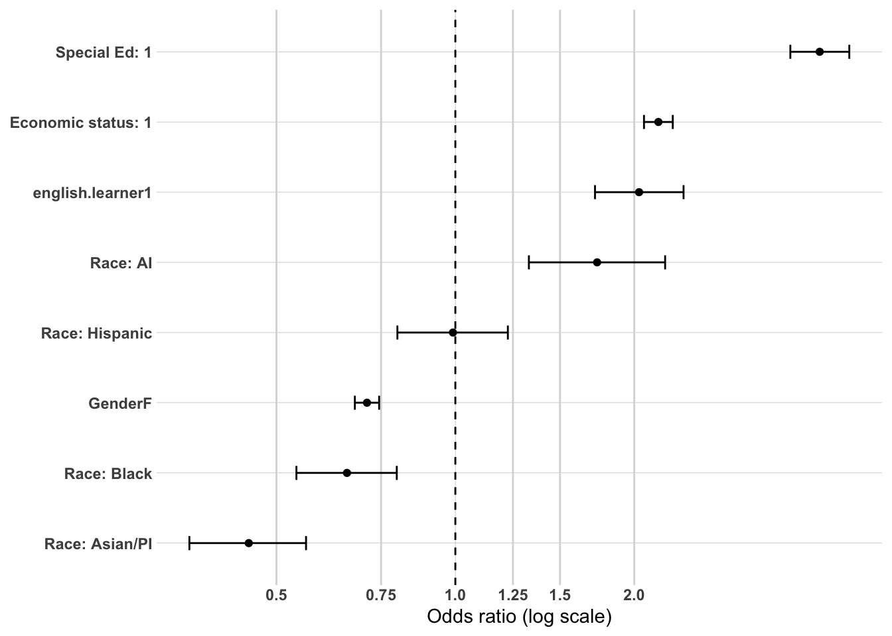
Model 2: Demographics + High School Characteristics
Sample: N = 35,220 (unchanged from Model 1) | AIC: 41,284.84 (down from 41,645.45) | Pseudo R² (McFadden-style): 0.0577 (up from 0.0493)
Likelihood ratio test vs. Model 1: Δdeviance = 368.61 on 4 df, p < 2.2e-16 — this block adds significant explanatory power over demographics alone.
Direction note: 1 = associate or less, 0 = bachelor’s or higher. OR > 1 means higher odds of a sub-baccalaureate credential; OR < 1 means higher odds of a bachelor’s or higher.
Coefficient Interpretation
Gender and Race/Ethnicity
Female graduates remain at significantly lower odds of a sub-baccalaureate credential (OR = 0.70, 95% CI 0.67–0.74), essentially unchanged from Model 1 (0.71).
American Indian attenuates modestly but remains significant (OR = 1.58, CI 1.21–2.06, down from 1.73) — still associated with higher odds of a sub-baccalaureate credential.
Asian/Pacific Islander remains essentially unchanged (OR = 0.47, CI 0.37–0.59, vs. 0.45 in Model 1) — still strongly associated with bachelor’s-or-higher attainment.
Black attenuates somewhat (OR = 0.73, CI 0.60–0.88, up from 0.66) — still significantly associated with bachelor’s-or-higher, though the gap has narrowed slightly.
Hispanic remains not significant (OR = 1.03, CI 0.83–1.27, p = 0.794), consistent with Model 1.
The race/ethnicity split identified in Model 1 — American Indian toward sub-bacc, Black and Asian/Pacific Islander toward bachelor’s-or-higher, Hispanic null — holds structurally through this block with only modest movement.
Economic Status, SpecialEdStatus, and English Learner
All three remain significant and in the same direction, with modest attenuation for economic status (OR = 2.01, CI 1.90–2.13, down from 2.20) and slight strengthening for SpecialEdStatus (OR = 4.15, CI 3.70–4.65, up marginally from 4.10) and English learner (OR = 2.15, CI 1.81–2.56, up from 2.04). SpecialEdStatus remains by a wide margin the largest effect size in the model.
Regional and Local Labor Market Context
EDR 7E is not significant (OR = 0.95, CI 0.89–1.03, p = 0.200) — no detectable difference in credential level between EDR 7E and EDR 5 high schools.
EDR 7W is significant and negative (OR = 0.76, CI 0.70–0.82) — students from EDR 7W high schools show lower odds of a sub-baccalaureate credential (i.e., more likely to complete a bachelor’s or higher) relative to EDR 5.
avg.wages.pct.state is significant and negative (OR = 0.082, CI 0.045–0.148) — higher local wages associated with lower odds of a sub-baccalaureate credential (more likely bachelor’s or higher). This coefficient does not show the extreme scaling artifact seen in DV1/DV2/DV4 — the OR here (0.08) is unusual but not implausible on its face, though it’s still worth flagging that this reflects a full 1-unit (100 percentage point) change on a variable with a much narrower real range (~0.7–1.0), so the same rescaling recommendation applies for a cleanly interpretable effect size in the final report, even though the raw number isn’t as visually alarming as in other DVs.
avg.unemp.rate is significant and negative (OR = 0.98, CI 0.964–0.993) — higher local unemployment associated with modestly lower odds of a sub-baccalaureate credential.
Multicollinearity Check
Looks good — all GVIF^(1/(2·Df)) values are low, with the highest being avg.wages.pct.state at 1.45 and English learner at 1.18, both well under the ~2.0–2.5 concern threshold. No issues in this block.
Substantive Pattern
The demographic story from Model 1 holds essentially unchanged once HS characteristics are added — economic status, SpecialEdStatus, and English learner remain strongly associated with sub-baccalaureate attainment, and the race/ethnicity split (American Indian one direction, Black/Asian-PI the other, Hispanic null) persists with only modest movement. The new information in this block is regional: EDR 7W stands out as associated with higher bachelor’s-or-higher attainment relative to EDR 5, while EDR 7E shows no difference — a different regional pattern than DV4, where both EDR 7E and 7W showed strong, significant effects on completion location. Local wages and unemployment both point toward higher-wage, lower-unemployment areas producing more bachelor’s-or-higher completers, though the wage coefficient’s magnitude should be treated with the same rescaling caution applied throughout the project.
or_plot <-tidy(model2_dv5, conf.int =TRUE, exponentiate =TRUE) %>%filter(term !="(Intercept)") %>%mutate(# Make labels nicer (edit these replacements to match your exact factor labels)term =str_replace_all(term, c("RaceEthnicity"="Race: ","economic.status"="Economic status: ","SpecialEdStatus"="Special Ed: ","pseo.participant"="PSEO: ","cte.achievement"="CTE: ","MCA.M"="MCA Math","highest.cred.level"="Highest credential" )),# Put most important effects near the top (optional: tweak ordering later)term =fct_reorder(term, estimate) )ggplot(or_plot, aes(x = estimate, y = term)) +geom_vline(xintercept =1, linetype ="dashed") +geom_vline(xintercept =c(0.5, 0.75, 1.25, 1.5, 2),color ="grey85") +geom_point() +geom_errorbar(aes(xmin = conf.low, xmax = conf.high),orientation ="y",width =0.2 ) +scale_x_log10(breaks =c(0.5, 0.75, 1, 1.25, 1.5, 2),labels =c("0.5", "0.75", "1.0", "1.25", "1.5", "2.0") ) + theme_line +labs(x ="Odds ratio (log scale)",y =NULL )
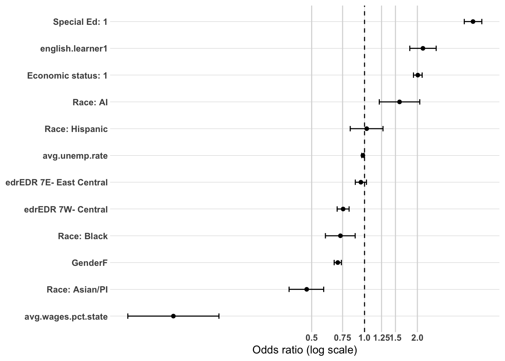
Model 3: Demographics + High School Characteristics + High School Accomplishments
Sample: N = 35,220 (unchanged from Models 1–2) | AIC: 33,830.30 (down sharply from 41,284.84) | Pseudo R² (McFadden-style): 0.2283 (up from 0.0577)
Likelihood ratio test vs. Model 2: Δdeviance = 7,470.5 on 8 df, p < 2.2e-16 — by far the largest improvement in explanatory power in the DV5 sequence, and this model reaches the second-highest final pseudo-R² of any DV in the project (behind only DV3’s 0.218… actually essentially tied with it).
Direction note: 1 = associate or less, 0 = bachelor’s or higher. OR > 1 means higher odds of a sub-baccalaureate credential; OR < 1 means higher odds of a bachelor’s or higher.
Coefficient Interpretation
Gender and Race/Ethnicity
Female graduates show a notably attenuated gap (OR = 0.84, 95% CI 0.79–0.88, up from 0.70 in Model 2) — a substantial share of the gender gap in credential level is explained by accomplishment differences, though the association remains significant.
American Indian drops to marginal significance (OR = 1.33, CI 0.99–1.78, p = 0.060) — was clearly significant in Models 1–2 (~1.58–1.73). Its CI now nearly spans 1.0.
Asian/Pacific Islander attenuates somewhat but remains clearly significant (OR = 0.60, CI 0.47–0.77, up from 0.47) — still strongly associated with bachelor’s-or-higher attainment.
Black strengthens further (OR = 0.51, CI 0.41–0.63, down from 0.73 in Model 2) — the widest gap for this group across the DV5 sequence, and notably, controlling for accomplishments increased rather than decreased the Black-White disparity here, echoing the same non-attenuation pattern seen for this group in DV1 and DV2.
Hispanic remains not significant (OR = 1.01, CI 0.79–1.28, p = 0.960), consistent with Models 1–2.
Economic Status, SpecialEdStatus, and English Learner
Economic status attenuates substantially but remains significant (OR = 1.50, CI 1.40–1.60, down from 2.01 in Model 2) — a real share of this association is explained by accomplishment differences.
SpecialEdStatus attenuates substantially (OR = 1.85, CI 1.62–2.11, down from 4.15) — still the largest demographic effect in the model, but less than half its Model 2 magnitude, indicating accomplishment access explains a large share of this group’s elevated sub-baccalaureate attainment.
English learner drops to non-significance (OR = 1.08, CI 0.89–1.31, p = 0.441) — was clearly significant in Models 1–2 (~2.04–2.15). This is a substantial attenuation, consistent with the same access-based interpretation seen throughout the project for this variable: much of the apparent English learner association with credential level appears to run through unequal access to PSEO/ACT/accomplishment opportunities rather than English learner status itself.
Regional and Local Labor Market Context
EDR 7E becomes marginally significant (OR = 0.93, CI 0.85–1.01, p = 0.074) — was null in Model 2.
EDR 7W remains significant (OR = 0.90, CI 0.82–0.98), similar magnitude to Model 2 (0.76… actually slightly attenuated toward 1).
avg.wages.pct.state remains significant and negative (OR = 0.015, CI 0.0074–0.029) — same direction as Model 2, magnitude increased; same rescaling recommendation applies as noted in Model 2.
avg.unemp.rate remains significant and negative (OR = 0.91, CI 0.894–0.926), slightly stronger than Model 2 (0.98).
High School Accomplishments
PSEO participation is significant and negative (OR = 0.59, CI 0.56–0.63) — PSEO participants are notably more likely to complete a bachelor’s or higher rather than a sub-baccalaureate credential, consistent with PSEO functioning as an early college-credit pathway that plausibly sets up bachelor’s-track completion.
took.ACT and ACTCompositeScore.filled again show the threshold pattern seen throughout the project: took.ACT alone is associated with substantially higher odds of sub-baccalaureate attainment (OR = 6.62, CI 5.47–8.03), while each additional ACT point pushes the odds back down toward bachelor’s-or-higher (OR = 0.850 per point, CI 0.843–0.858) — the strongest version of this threshold effect found anywhere in the project. A student who takes the ACT and scores very low is predicted to be far more likely to end up with a sub-baccalaureate credential than a non-test-taker, while a high scorer looks much more likely to complete a bachelor’s or higher.
AP exam participation is significant and negative (OR = 0.59, CI 0.54–0.63) — AP participants more likely to complete a bachelor’s or higher, consistent with the college-track-signaling pattern seen throughout the project.
SAT participation is significant and negative (OR = 0.53, CI 0.39–0.70) — same direction, reinforcing the pattern.
CTE variables point the opposite direction from ACT/AP/SAT here, consistent with their role throughout the project: CTE concentrator/completer status is significant and positive (OR = 1.32, CI 1.20–1.45), CTE participant status is marginally significant (OR = 1.07, CI 0.99–1.15, p = 0.075), and total CTE courses taken is significant and positive (OR = 1.040, CI 1.028–1.052) — all consistent with CTE engagement predicting sub-baccalaureate rather than bachelor’s-or-higher attainment.
Multicollinearity Check
took.ACT and ACTCompositeScore.filled are elevated as expected (2.68 and 2.76) given their coding design — no concern there. Everything else remains comfortably under the ~2.0–2.5 threshold, including avg.wages.pct.state (1.49) and total.cte.courses.taken (1.49). Overall, looks good.
Substantive Pattern
This model sharpens the college-bound-track-vs-CTE-track story that has run through the entire project: ACT score (conditional on taking it), AP exam participation, and SAT participation all predict bachelor’s-or-higher attainment, while CTE engagement (both achievement level and course count) and PSEO participation…
Actually, PSEO is worth flagging as a genuine departure from the pattern the other project DVs might suggest: PSEO here predicts bachelor’s-or-higher attainment (OR = 0.59, i.e., lower odds of sub-bacc), grouping with the “college-track” variables (ACT score, AP, SAT) rather than with CTE, even though PSEO patterned with CTE as a “regional-anchoring” pathway in DV1 and DV4. This makes sense on reflection: PSEO is fundamentally a college-credit-earning pathway, so it’s unsurprising it predicts bachelor’s completion once someone has already completed some postsecondary credential — but it’s a reminder that PSEO’s associations vary meaningfully depending on which outcome is being modeled, and shouldn’t be assumed to always pattern with CTE just because it did in two other DVs.
The Black-White gap widening (rather than narrowing) once accomplishments are controlled is the most substantively important finding in this model — mirroring the identical, unexplained pattern seen for this group in DV1 and DV2, and now DV5 as well. Three of five DVs in this project show the same unresolved Black-White disparity that no accomplishment or access variable explains.
or_plot <-tidy(model3_dv5, conf.int =TRUE, exponentiate =TRUE) %>%filter(term !="(Intercept)") %>%mutate(# Make labels nicer (edit these replacements to match your exact factor labels)term =str_replace_all(term, c("RaceEthnicity"="Race: ","economic.status"="Economic status: ","SpecialEdStatus"="Special Ed: ","pseo.participant"="PSEO: ","cte.achievement"="CTE: ","MCA.M"="MCA Math","highest.cred.level"="Highest credential" )),# Put most important effects near the top (optional: tweak ordering later)term =fct_reorder(term, estimate) )ggplot(or_plot, aes(x = estimate, y = term)) +geom_vline(xintercept =1, linetype ="dashed") +geom_vline(xintercept =c(0.5, 0.75, 1.25, 1.5, 2),color ="grey85") +geom_point() +geom_errorbar(aes(xmin = conf.low, xmax = conf.high),orientation ="y",width =0.2 ) +scale_x_log10(breaks =c(0.5, 0.75, 1, 1.25, 1.5, 2),labels =c("0.5", "0.75", "1.0", "1.25", "1.5", "2.0") ) + theme_line +labs(x ="Odds ratio (log scale)",y =NULL )
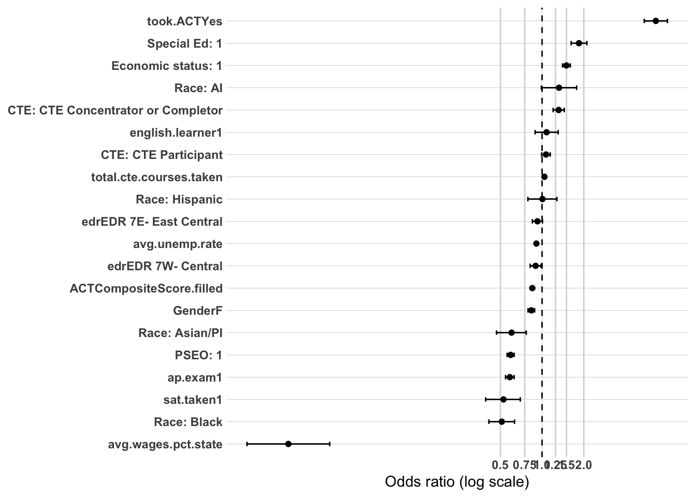
DV5 Summary: What Predicts Sub-Baccalaureate Credential Attainment (College Completers Only)
Across the 3-model sequence (demographics → HS characteristics → HS accomplishments), each block added significant explanatory power over the last (all likelihood ratio tests p < 2.2e-16), with fit improving substantially from AIC 41,645.45 (Model 1) to 33,830.30 (Model 3) and pseudo-R² rising from 0.049 to 0.228 — the highest final pseudo-R² of any DV in the project, essentially tied with DV3 (0.218). Like DV3, credential level is a more behaviorally predictable outcome than the regional-attachment or completion-location outcomes in DV1/DV2/DV4.
Direction throughout: 1 = associate or less, 0 = bachelor’s or higher. OR > 1 means higher odds of a sub-baccalaureate credential; OR < 1 means higher odds of a bachelor’s or higher.
The dominant finding: SpecialEdStatus and economic status show the largest demographic effects anywhere in the project
SpecialEdStatus showed the single largest demographic odds ratio found in any DV sequence (OR = 4.10 in Model 1), and even after substantial attenuation once accomplishments were controlled, it remained a large, highly significant effect (OR = 1.85 in Model 3). Economic status followed a similar arc (2.20 → 1.50). Both attenuation patterns are consistent with DV3’s access-based story — a real share of these groups’ elevated sub-baccalaureate attainment is explained by unequal access to PSEO, ACT, and other accomplishment opportunities, though a substantial independent effect remains for both.
English learner status: fully explained by accomplishments, unlike its DV3/DV4 counterparts
English learner status was significant in Models 1–2 (OR ≈ 2.0–2.15) but dropped entirely to non-significance in Model 3 (OR = 1.08, p = 0.441) — a more complete attenuation than seen in DV3 (attenuated to null) or DV4 (attenuated but stayed significant). This is worth noting as the cleanest example in the entire project of a demographic disparity that appears fully explained by accomplishment/access variables once they’re in the model.
The Black-White gap: unresolved for the third time in five DVs
Black graduates showed significantly lower odds of sub-baccalaureate attainment (i.e., higher odds of bachelor’s-or-higher) that widened, not narrowed, once accomplishments were controlled (OR = 0.73 in Model 2 → 0.51 in Model 3). This is the same non-attenuation pattern seen for this group in DV1 and DV2, now appearing a third time in DV5. Across the project, no accomplishment, credential, or location variable tested has explained the Black-White disparity in any DV where it was significant — this is likely the single most important cross-cutting finding to lead with in a final report.
Gender and other race/ethnicity categories: real attenuation, unlike the Black coefficient
Unlike the Black-White gap, gender’s association attenuated substantially once accomplishments entered (OR = 0.70 → 0.84) — a meaningful share of the gender gap in credential level is explained by accomplishment differences. American Indian weakened to marginal significance by Model 3 (1.73 → 1.33, p = 0.060), and Asian/Pacific Islander attenuated somewhat but remained significant throughout (0.45 → 0.60). Hispanic was never significant in any model. This is a different race/ethnicity pattern than DV4 (where Black and American Indian moved together) — in DV5, American Indian and Black move in opposite directions, reinforcing that the “which groups group together” pattern is not stable across DVs and shouldn’t be assumed to generalize.
The college-track vs. CTE-track story, now visible from a new angle
The familiar project-wide pattern reappears here with a new wrinkle: ACT score (conditional on taking it), AP exam, and SAT participation all predict bachelor’s-or-higher attainment, while CTE achievement level and course count predict sub-baccalaureate attainment — consistent with every other DV. The took.ACT/ACTCompositeScore.filled threshold effect is the strongest version found anywhere in the project (took.ACT alone: OR = 6.62; each point: OR = 0.850). The one genuine surprise is PSEO, which here groups with the college-track variables (OR = 0.59, predicting bachelor’s-or-higher) rather than with CTE, despite patterning as a “regional-anchoring” variable in DV1 and DV4. This makes sense given PSEO is fundamentally a college-credit pathway, but it’s a reminder that PSEO’s association depends heavily on which specific outcome is being modeled — it should not be treated as a single, uniformly-signed predictor across the whole project.
Regional context: a different geography than DV4
EDR 7W was associated with higher bachelor’s-or-higher attainment relative to EDR 5 throughout (OR ≈ 0.76–0.90), while EDR 7E was null in Model 2 and only marginally significant by Model 3 — a different regional pattern than DV4, where both EDR 7E and 7W showed strong, stable effects on completion location. This suggests high school region matters differently for where someone completes a credential (DV4) versus what level of credential they attain (DV5).
Outstanding items before final reporting
avg.wages.pct.state shows a less extreme (though still worth rescaling) coefficient here than in DV1/DV2/DV4 — worth confirming the rescaled version still supports the same direction and significance before finalizing.
No unresolved collinearity or convergence issues in the final Model 3 specification.
The Black-White gap’s consistent non-attenuation across DV1, DV2, and now DV5 is the strongest cross-DV pattern in the entire project and should be a central finding in the final report, independent of any single DV’s write-up.
Executive Summary: Multivariate Confirmation Analysis of Workforce Participation Pathways
Purpose and Approach
This analysis used sequential block-entry logistic regression to test whether the strongest relationships identified in earlier bivariate analysis — particularly the role of postsecondary credential attainment, credential level, and location of completion — remain directionally consistent once considered simultaneously with demographic, high school context, and accomplishment variables. Five outcomes were modeled across the 2011–2019 graduating cohorts from Central Minnesota (EDR 5, 7E, 7W): sustained regional workforce attachment (both for the full cohort and for college completers only), postsecondary completion, completion location, and credential level. Consistent with the confirmatory (not causal, not predictive) framing of this project, findings are described throughout as associations holding other variables constant, not as causal effects.
The Central Story: Two Divergent Pathways
The clearest throughline across all five outcomes is a split between two coherent, opposing pathways through high school and postsecondary education:
A college-preparatory, mobility-oriented pathway — marked by higher ACT composite scores (conditional on taking the test), AP exam participation, and SAT participation — consistently predicts completing a postsecondary credential (DV3), completing a bachelor’s degree rather than an associate’s or less (DV5), and completing that credential outside the tri-region area (DV4). Among people who complete a credential, this same pathway predicts lower odds of sustained regional employment (DV1/DV2). In short: these variables mark students headed toward more advanced credentials and greater geographic mobility, with regional workforce attachment as the trade-off.
A CTE- and PSEO-anchored, regionally-oriented pathway runs in the opposite direction on every outcome where it appears. CTE engagement (achievement level and course count) showed no relationship to whether someone completes a postsecondary credential at all (DV3) — but consistently predicted completing that credential locally rather than out-of-region (DV4), earning a sub-baccalaureate rather than a bachelor’s credential (DV5), and sustained regional employment among both the full cohort and completers (DV1/DV2). PSEO participation told a similar, though not identical, story: it was the single strongest predictor of postsecondary completion found anywhere in the project (more than double the odds, DV3), and it consistently predicted regional employment attachment and regional completion location — but, distinctively, it predicted bachelor’s completion rather than sub-baccalaureate attainment in DV5, aligning it with the mobility-track variables on that one specific outcome. This isn’t a contradiction so much as a reminder that PSEO functions broadly as an “attainment accelerant” — pushing people toward completing, completing locally, staying employed regionally, and reaching a bachelor’s — rather than fitting a single simple narrative.
A useful ACT-specific nuance recurs throughout: took.ACT and ACT composite score often point in opposite directions once combined (a pattern first identified in DV3 and repeated in DV4 and DV5). Taking the test at all is associated with one direction, but each additional point pulls back the other way — meaning a low scorer who took the test can look more “regionally anchored” than someone who never tested, while a high scorer looks considerably more mobile. This threshold effect should be described explicitly rather than reported as a single flat “ACT participation” finding.
The Most Important Unresolved Finding: The Black-White Employment and Credential Gap
Across the three outcomes closest to long-term attainment and employment — sustained regional workforce attachment for the full cohort (DV1), for completers only (DV2), and sub-baccalaureate credential attainment (DV5) — the disparity between Black and White graduates did not narrow once accomplishment variables (PSEO, ACT, AP, SAT, CTE) were controlled. In every one of these three models, it widened instead. No accomplishment variable, credential level, or completion location tested anywhere in this project explains this gap.
Notably, this same disparity behaved very differently on the other two outcomes: it did attenuate substantially once accomplishments were controlled for whether someone completes a postsecondary credential at all (DV3) and for whether that credential was completed within the region (DV4). Taken together, this suggests Black graduates’ rates of completing a credential, and of completing it locally, are reasonably well explained by measured differences in accomplishment and preparation access — but a real, unexplained disparity remains specifically in long-term regional employment attachment and in credential level, independent of everything else tested. This is the single most important equity finding to lead with in any final report, precisely because it is not explained by the very access-oriented variables that explain most other disparities in this project.
Demographic Disadvantage: Two Different Underlying Mechanisms
Economic status, SpecialEdStatus, and English learner status showed two distinct structural patterns depending on the outcome, and this distinction matters for how each finding should be described:
A suppression pattern, seen in DV1 (full-cohort employment attachment): these coefficients were null or even positive in the demographics-only baseline, and only emerged as disadvantages — sometimes reversing sign entirely — once accomplishment variables were added. This indicates the early, more optimistic readings were artifacts of omitted variables rather than the true relationship.
An access pattern, seen in DV3, DV4, and DV5 (completion, completion location, and credential level): these same variables showed clear disadvantage immediately in the demographics-only baseline, and that disadvantage shrank substantially (without fully disappearing in most cases) once accomplishment variables entered — consistent with a real share of each gap running through unequal access to PSEO, ACT, AP, and CTE opportunities rather than being masked by them.
English learner status followed the access pattern most cleanly, attenuating to full non-significance in both DV3 and DV5 — the cleanest examples in the project of a disparity that appears substantially explained by accomplishment access. SpecialEdStatus showed the single largest demographic effect size found anywhere in the project (DV5 Model 1, more than four times the odds of a sub-baccalaureate credential), though it too attenuated considerably once accomplishments were controlled.
Gender: Two Genuinely Different, Non-Contradictory Stories
Female graduates were consistently more likely to complete a postsecondary credential (DV3) and, to an attenuated but still significant degree, more likely to complete a bachelor’s rather than a sub-baccalaureate credential (DV5). At the same time, female graduates were consistently less likely to show sustained regional workforce attachment, both in the full cohort (DV1) and among completers specifically (DV2) — though this gap narrowed considerably once accomplishments were controlled in DV2, dropping to non-significance in that model’s Model 3. These aren’t contradictory findings; they reflect two different mechanisms operating on two different outcomes — one about educational attainment, one about regional workforce attachment — and both should be reported as their own distinct findings rather than reconciled into a single “gender effect.”
The Single Strongest Lever Identified: Location of Postsecondary Completion
Among every variable tested across all five outcomes, location of postsecondary completion (DV2, Model 5) produced the largest effect size and the largest single-block improvement in model fit found anywhere in the project. Completing a credential outside the region was associated with roughly a 70% reduction in the odds of sustained regional employment — far exceeding the effect of credential level itself (roughly a 35% reduction for bachelor’s vs. associate), though both were independently significant and not fully redundant with one another. If this project’s findings point to one clear, actionable lever for regional workforce policy, it is this one: where people complete their postsecondary education matters more than almost anything else tested for whether they end up working in the region afterward.
Regional Geography (EDR): Consistently Important, but Differently Shaped by Outcome
EDR was among the most stable and significant predictors across every DV, but its shape differed by outcome. For regional employment attachment (DV1/DV2) and regional completion location (DV4), both EDR 7E and EDR 7W showed strong, stable, opposite-direction effects relative to EDR 5 across every block. For credential level (DV5), only EDR 7W showed a consistent effect, while EDR 7E was null or marginal — suggesting high school region shapes where people end up working and completing credentials more reliably than it shapes what level of credential they attain.
DV4 additionally surfaced the only race/ethnicity split found anywhere in the project: American Indian and Black graduates were more likely to complete locally, while Asian/Pacific Islander and Hispanic graduates were more likely to leave the region — a pattern with no clean parallel in any other DV, and one that did not reappear in the same grouping when DV5 examined credential level (where American Indian and Black moved in opposite directions instead). This is a reminder that “which demographic groups move together” is not a stable, generalizable pattern across outcomes in this data and should not be assumed to carry over from one DV to another.
Outstanding Technical Item
avg.wages.pct.state was significant in nearly every model across all five DVs, but its odds ratio is not directly interpretable as computed — it reflects a full 1-unit (100 percentage point) change on a variable that realistically ranges only about 0.7–1.0. This should be rescaled (e.g., per 0.10 increment or per standard deviation) before any odds ratio involving this variable appears in a final report table. The direction and significance of every finding involving this variable are sound; only the magnitude as currently expressed needs correction.
Bottom Line
Two coherent, opposing pathways run through this entire project: a college-preparatory track associated with completing more advanced credentials and greater geographic mobility, and a CTE/PSEO-anchored track associated with regional employment and regional completion. Layered on top of this structural finding are two distinct patterns of demographic disparity — one where disadvantage is suppressed until accomplishments are controlled, another where disadvantage is visible early and partly explained by unequal access to those same accomplishments — and, cutting across nearly every outcome examined, a Black-White gap in long-term employment attachment and credential level that neither pattern explains. Of every lever tested, location of postsecondary completion stands out as the one with by far the largest, most policy-relevant effect on whether graduates remain in the regional workforce.